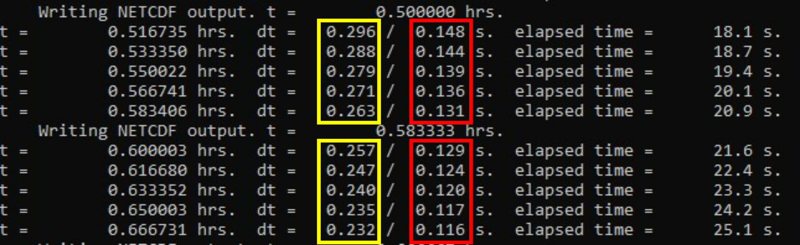
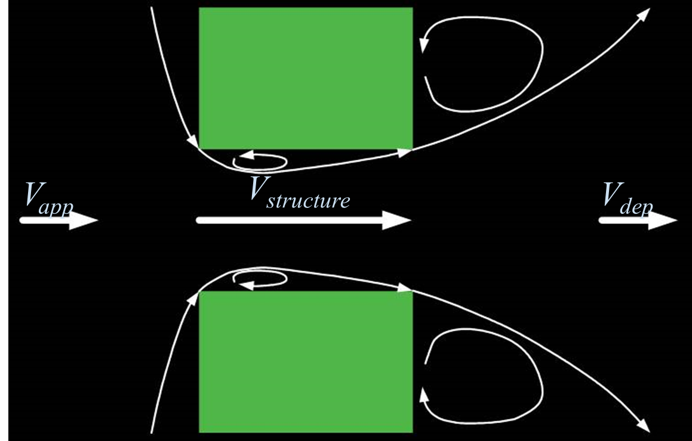

| Symbol | Description |
|---|---|
\(\nu_{t,h}\) |
Turbulent eddy viscosity |
\(C_s\) |
Smagorinsky coefficient |
\(l\) |
Mixing length scale, distance between adjacent cell centroids |
\(u\), \(v\) |
Horizontal velocity components in the \(x\) and \(y\) directions |
\(\frac{\partial u}{\partial x}\), \(\frac{\partial v}{\partial y}\) |
Velocity gradients in the direction of flow (normal strain rates) |
\(\frac{\partial u}{\partial y}\), \(\frac{\partial v}{\partial x}\) |
Cross-direction velocity gradients (shear strain rates) |
Appendix B — Science
B.1 Overview
This appendix is a technical reference for some foundational aspects of the science underpinning TUFLOW FV. It does not describe model configuration, command syntax, or parameter usage, which are documented in the model construction chapters.
B.2 Governing Equations
TUFLOW FV solves the Non-Linear Shallow Water Equations (NLSWE), including viscous flux terms and various source terms on a flexible mesh comprised of triangular and quadrilateral elements.
The NLSWE describe the conservation of mass and momentum in an incompressible fluid under hydrostatic pressure and the Boussinesq approximation. The equations relate the time-derivative of the conserved variables to flux-gradient and source terms:
\[ \frac{\partial \mathbf{U}}{\partial t} + \nabla \cdot \mathbf{F}(\mathbf{U}) = \mathbf{S}(\mathbf{U}) \tag{B.1}\]
The finite-volume schemes are derived from the conservative integral form of the NLSWE, obtained by integrating the conservation equations over a control volume \(\Omega\):
\[ \int_{\Omega} \frac{\partial \mathbf{U}}{\partial t} d\Omega + \int_{\Omega} \nabla \cdot \mathbf{F}(\mathbf{U}) d\Omega = \int_{\Omega} \mathbf{S}(\mathbf{U}) d\Omega \tag{B.2}\]
Applying Gauss’s theorem, the flux-gradient volume integral is rewritten as a boundary integral:
\[ \frac{\partial}{\partial t} \int_{\Omega} \mathbf{U} d\Omega + \oint_{\partial \Omega} (\mathbf{F} \cdot \mathbf{n}) ds = \int_{\Omega} \mathbf{S}(\mathbf{U}) d\Omega \tag{B.3}\]
where \(\int_{\Omega} d\) represents volume integrals, \(\oint_{\partial \Omega} ds\) represents a boundary integral and \(\mathbf{n}\) is the unit-normal vector.
The NLSWE conserved variables are volume (depth), x-momentum and y-momentum:
\[ \mathbf{U} = \begin{bmatrix} h \\ hu \\ hv \end{bmatrix} \tag{B.4}\]
where: - \(h\) is depth - \(u\) is x-velocity - \(v\) is y-velocity
The x, y and z components of the inviscid flux \(\mathbf{F}^I\) and viscous flux \(\mathbf{F}^V\) terms in the NLSWE are given via Equation B.5
\[ \mathbf{F}_x^I = \begin{bmatrix} hu \\ hu^2 + \frac{1}{2} gh^2 \\ huv \end{bmatrix}, \quad \mathbf{F}_x^V \approx \begin{bmatrix} 0 \\ -h \nu_{t,h} \frac{\partial u}{\partial x} \\ -h \nu_{t,h} \frac{\partial v}{\partial x} \end{bmatrix} \]
\[ \mathbf{F}_y^I = \begin{bmatrix} hv \\ huv \\ hv^2 + \frac{1}{2} gh^2 \end{bmatrix}, \quad \mathbf{F}_y^V \approx \begin{bmatrix} 0 \\ -h \nu_{t,h} \frac{\partial u}{\partial y} \\ -h \nu_{t,h} \frac{\partial v}{\partial y} \end{bmatrix} \tag{B.5}\]
\[ \mathbf{F}_z^I = \begin{bmatrix} hw \\ hwu \\ hwv \end{bmatrix}, \quad \mathbf{F}_z^V \approx \begin{bmatrix} 0 \\ -\nu_{t,v} \frac{\partial u}{\partial z} \\ -\nu_{t,v} \frac{\partial v}{\partial z} \end{bmatrix} \]
The source terms \(\mathbf{S}(\mathbf{U})\) include bed slope effects, Coriolis forces, atmospheric pressure gradients and other external forces.
\[ \mathbf{S} = \begin{bmatrix} 0 \\ gh \frac{\partial z_b}{\partial x} + fv h - \frac{h}{\rho_0} \frac{\partial p_a}{\partial x} - \frac{hg}{\rho_0} \int_{z}^{\eta} \frac{\partial \rho}{\partial x} dz - \frac{1}{\rho_0} \left( \frac{\partial s_{xx}}{\partial x} + \frac{\partial s_{xy}}{\partial y} \right) + \frac{\tau_{sx}}{\rho_0} - \frac{\tau_{bx}}{\rho_0} \\ gh \frac{\partial z_b}{\partial y} - fu h - \frac{h}{\rho_0} \frac{\partial p_a}{\partial y} - \frac{hg}{\rho_0} \int_{z}^{\eta} \frac{\partial \rho}{\partial y} dz - \frac{1}{\rho_0} \left( \frac{\partial s_{yx}}{\partial x} + \frac{\partial s_{yy}}{\partial y} \right) + \frac{\tau_{sy}}{\rho_0} - \frac{\tau_{by}}{\rho_0} \end{bmatrix} \tag{B.6}\]
where:
- \(\frac{\partial z_b}{\partial x}, \frac{\partial z_b}{\partial y}\) are the x- and y-components of bed slope,
- \(f\) is the Coriolis coefficient,
- \(\rho\) is the local fluid density, \(\rho_0\) is the reference density and \(p_a\) is the mean sea level pressure,
- \(s_{ij}\) is the short-wave radiation stress tensor, and
- \(\tau_s\) and \(\tau_b\) are, respectively, the surface and bottom shear stress terms (where applicable).
Other source terms not included above include inflow and outflow to and from the water column.
B.3 Scalar Conservation Equations
Analogous conservation equations are solved for the transport of scalar constituents in the water column.
The conserved scalar variable is:
\[ \mathbf{U} = \begin{bmatrix} hC \end{bmatrix} \tag{B.7}\]
where:
- \(C\) is the constituent concentration
The flux components of the scalar conservation equation are:
\[ \mathbf{F}_x^I = \begin{bmatrix} huC \end{bmatrix}, \quad \mathbf{F}_x^V \approx \begin{bmatrix} -h(D_{xx} \frac{\partial C}{\partial x} + D_{xy} \frac{\partial C}{\partial y}) \end{bmatrix} \]
\[ \mathbf{F}_y^I = \begin{bmatrix} hvC \end{bmatrix}, \quad \mathbf{F}_y^V \approx \begin{bmatrix} -h(D_{yx} \frac{\partial C}{\partial x} + D_{yy} \frac{\partial C}{\partial y}) \end{bmatrix} \tag{B.8}\]
\[ \mathbf{F}_z^I = \begin{bmatrix} hwC \end{bmatrix}, \quad \mathbf{F}_z^V \approx \begin{bmatrix} -h\nu_t' \frac{\partial C}{\partial z} \end{bmatrix} \]
The source components may include scalar decay and settling:
\[ \mathbf{S} = \begin{bmatrix} - K_d hC - w_s C \end{bmatrix} \tag{B.9}\]
where:
- \(K_d\) is a scalar decay-rate coefficient
- \(w_s\) is a scalar settling velocity
B.4 Numerical Scheme
The system of equations is solved using a Finite Volume numerical scheme. Further details on Finite Volume methods for hyperbolic systems are provided in LeVeque (2002).
B.4.1 Discrete System
The spatial domain is discretised using contiguous, non-overlapping triangular and quadrilateral cells (or elements).
A cell-centred spatial discretisation is adopted for all NLSWE conserved variables. The discrete form of the equations for cell \(i\), with \(k=1,N_k\) cell-faces is:
\[ \frac{\partial \mathbf{U}_i}{\partial t} = -\frac{1}{A_i} \sum_{k=1}^{N_k} (\mathbf{F}_k \cdot \mathbf{n}_k) L_k + \mathbf{S}_i \tag{B.10}\]
In this discrete equation:
- \(\mathbf{U}_i\) represents the volume-average of the conserved variables in cell \(i\)
- \(A_i\) is the cross-sectional (plan) area of the cell
- \(\mathbf{S}_i\) is the volume-average source term
A first-order midpoint quadrature is used to evaluate the cell boundary flux integral, where:
- \(\mathbf{n}_k\) is the boundary/face unit normal vector for face \(k\)
- \(L_k\) is the corresponding face length
The discrete conserved variable field is assumed to be continuous within a cell but discontinuous at the cell faces.
The above has essentially converted the original system of partial differential equations to one of ordinary differential equations. This allows the solution of the conservation system of equations to be separated into a two-stage algorithm:
- The spatial integration of the discrete flux and source components (right hand side of Equation B.10)
- The time integration of the discrete system of conservation equations
B.4.2 Spatial Order
The first-order form of the finite volume schemes assumes a piecewise constant \(\mathbf{U}_i\) within each model cell (LeVeque (2002)). Finite-volume schemes with higher-order spatial accuracy can be derived by re-constructing a piecewise continuous \(\mathbf{U}_i\left(x,y,z\right)\) within each model cell. For instance, a second-order spatial scheme can be derived by re-construction of a piecewise linear \(\mathbf{U}_i\left(x,y,z\right)\), while a third-order spatial scheme would require re-construction of a piecewise parabolic \(\mathbf{U}_i\left(x,y,z\right)\). It should be noted that the discrete \(\mathbf{U}_i\) remains discontinuous at cell-faces even for schemes higher than first-order (Hubbard (1999)).
The higher spatial orders can significantly reduce numerical diffusion where the physical system being solved includes large spatial gradients relative to the discrete mesh size. Numerical diffusion can also be reduced through selection of a finer mesh resolution; however the higher spatial order schemes will generally achieve this outcome with less increase in computational overhead.
In general, the solution will only benefit from higher spatial order when the spatial gradients become sufficiently large relative to the mesh size. This can only be determined by testing for improvements in the higher-order solution relative to the first-order solution. If the first-order and high-order solutions are more or less identical for the particular model purpose, then it is generally appropriate to adopt the first-order accuracy. However, if the solutions are significantly different this suggests that first-order numerical diffusion is substantial relative to the physical fluxes that are being resolved in the model. In this case the higher-order solution is probably of a higher quality, though care must be exercised with the higher order solutions to ensure that spurious overshoots at the cell faces are avoided by the reconstruction procedure.
The Total Variation Diminishing (TVD) property (and hence stability) of the higher-order scheme solution is achieved using a choice of gradient limiter schemes. A variety of gradient limiters are available in TUFLOW FV and are listed in order from least to most compressive:
- Horizontal (all after Batten et al. (1996)):
- Limited Central Difference (LCD)
- Maximum Limited Gradient (MLG)
- Vertical (all after Fringer et al. (2005))
- MINMOD
- Maximum Central
- Superbee
The most compressive schemes will maximise the resolution of sharp gradients but may do so at the expense of additional computational overhead. The most compressive gradient limiter schemes also increase the risk of generating spurious overshoots within the solution.
Within TUFLOW FV horizontal and vertical reconstructions are performed separately. A first-order horizontal reconstruction can be combined with a second-order vertical reconstruction, and vice-versa.
B.4.3 Mode Splitting
Efficient integration of the NLSWE is achieved through a mode-splitting scheme, where different components of the governing equations are updated using an appropriate timestep that considers both physical and numerical stability constraints (e.g. Shchepetkin & McWilliams (2005)).
A reduced set of equations comprising all terms other than the barotropic (or free-surface) pressure-gradients is initially partially solved. As part of this solution, an appropriate “internal mode” timestep is calculated that obeys both:
- Courant-Friedrichs-Levy (CFL) limits due to advective current speeds
- Peclet number (Pe) constraints imposed by diffusion terms
Prior to updating (or time-integrating) the solution, an external mode loop is entered, in which a 2D depth-averaged reduction of the 3D NLSWE is solved multiple times, using a timestep that obeys the barotropic Courant-Friedrich-Levy (CFL) constraint imposed by the shallow water wave speed:
\[ \bar{u} \pm \sqrt{gh} \tag{B.11}\]
where \(\bar{u}\) is the depth-averaged current speed. The external mode loop is repeated until the cumulative timestep is approximately equal to the internal mode timestep.
The depth-averaged inviscid fluxes from the external mode solution are then used to correct the internal mode inviscid fluxes, ensuring that they represent the total inviscid flux for the 3D solution. The corrected fluxes are then used to update the full 3D solution.
A stability constraint imposed by the baroclinic internal wave speed is not explicitly calculated and may not always be met by the mode splitting scheme. If oscillations in the pycnocline cause numerical instabilities, this can be addressed by reducing the upper-limiting timestep.
Viscous fluxes and both inviscid and viscous scalar transport fluxes are calculated only for the internal mode (outer) loop.
Mode splitting can be disabled for 2D simulations, and this configuration can be more computationally efficient for fast, shallow flow scenarios where the internal mode and external mode timesteps are similarly restrictive. Three dimensional simulations are only supported with mode splitting enabled.
B.4.4 Flux Terms
A key step in the Finite-Volume numerical scheme is the calculation of numerical fluxes across cell boundaries:
- Inviscid fluxes \((\mathbf{F}_x^I, \mathbf{F}_y^I, \mathbf{F}_z^I)\) represent the directly resolved flux of mass and momentum between adjacent cells
- Viscous fluxes \((\mathbf{F}_x^V, \mathbf{F}_y^V, \mathbf{F}_z^V)\) represent the mixing of mass and momentum that is not directly resolved as advection within the numerical model
B.4.4.1 Viscous Fluxes
Viscous flux terms are calculated using the traditional gradient-diffusion model, with a variety of options available for the calculation of eddy-viscosity and scalar diffusivity.
B.4.4.1.1 Horizontal Viscous Fluxes
The horizontal viscous fluxes \((\mathbf{F}_x^V, \mathbf{F}_y^V)\) are calculated according to Equation B.5 (momentum) and Equation B.8 (scalars). The horizontal eddy-viscosity can be specified directly using a temporally-constant value or calculated using the Smagorinsky (1963) or J. Wu (1982) formulation.
The horizontal scalar-diffusivity tensor can also be specified directly (as an isotropic constant value), calculated using the Smagorinsky (1963) formulation or computed using the Elder formulation (Falconer et al. (2005)). The Elder model calculates a non-isotropic diffusivity tensor that accounts for velocity dispersion processes not resolved in 2D depth-averaged models:
\[ D_{xx} = \frac{(D_l u^2 + D_t v^2) h}{u_*}, \quad D_{yy} = \frac{(D_l v^2 + D_t u^2) h}{u_*} \tag{B.12}\]
\[ D_{xy} = D_{yx} = \frac{(D_l - D_t) uvh}{u_*} \tag{B.13}\]
where:
- \(D_l\) and \(D_t\) are the Elder coefficients in the directions lateral to and transverse to the local currents, respectively,
- \(u_* = \sqrt{\frac{|\tau_b|}{\rho}}\) is the friction velocity.
The observed range of values for \(D_l\) and \(D_t\) derived from measurements is discussed in Fischer et al. (1979). In 3D model simulations, the Smagorinsky formulation is generally more applicable. The Elder formulation is recommended only for 2D simulations.
B.4.4.1.2 Vertical Viscous Fluxes
The vertical viscous fluxes \(\mathbf{F}_z^V\) are calculated according to Equation B.5 (momentum) and Equation B.8 (scalars). An unconditionally stable semi-implicit scheme is adopted in the discretization of \(\mathbf{F}_z^V\) to prevent timestep restrictions.
The vertical eddy viscosity, \(\nu_t\), can be directly specified as constant, computed using TUFLOW FV’s turbulence model or calculated from the simple parametric model formulation including the Munk & Anderson (1948) stability function:
\[ \nu_{t0}=\kappa u_\ast z\left(c_1-c_2\frac{z}{h}\right) \tag{B.14}\]
\[ \nu_t=\nu_{t0} f(Ri) \tag{B.15}\]
where Ri is the gradient Richardson number defined as:
\[ Ri=\frac{N^2}{\left(\frac{\partial u}{\partial z}\right)^2} \tag{B.16}\]
and N is the Brunt-Vaisala frequency (or buoyancy frequency):
\[ N=\sqrt{-\frac{g}{\rho}\frac{\partial\rho}{\partial z}} \tag{B.17}\]
Scalar diffusivities are set at 0.74 * \(\nu_t'\).
B.4.4.2 Inviscid Fluxes
The inviscid fluxes \(\mathbf{F}_x^I, \mathbf{F}_y^I, \mathbf{F}_z^I\) represent the directly resolved flux of mass and momentum between adjacent cells. Inviscid fluxes are computed at each cell face based on the conserved variable state immediately on either side of the face.
For a first-order spatial scheme, these values are equivalent to the adjacent-cell averages. In higher-order schemes, the conserved variable state at the cell faces is reconstructed from the cell-averaged values.
B.4.4.2.1 Internal Mode
The internal mode inviscid flux calculations solve the full 3D NLSWE, excluding terms related to the free-surface pressure gradient. A centered scheme is used for the internal mode mass flux, while an upwind scheme is used for momentum flux terms.
Flux-like source terms originating from bed slope and baroclinic pressure gradients are included in the cell-face flux calculation, rather than being part of the volume-integrated source term in Equation B.10 (see Section B.2).
The internal mode timestep is determined by a combination of internal advection CFL constraints and viscous flux Péclet constraints. A stable internal model timestep is selected before entering the external mode.
B.4.4.2.2 External Mode
The external mode inviscid flux calculations solve the 2D depth-averaged NLSWE. In 3D simulations, the external mode is initiated by computing depth-averages of the 3D conserved variable fields. Viscous fluxes and baroclinic pressure gradients are also depth-integrated at the start of the external mode loop.
The 2D depth-averaged NLSWE are solved using Roe’s approximate Riemann solver (Roe (1981)). Flux-like source terms, such as bed slope and depth-averaged baroclinic pressure gradients, are included in the cell-face flux calculation rather than being incorporated in the volume-integrated source term in Equation B.10 (see Section B.2).
The external mode timestep is dictated by the surface gravity wave CFL constraint and depth-averaged viscous flux Péclet constraints (Murillo et al. (2005)). A stable timestep is selected for each external mode sub-timestep. Within the external mode loop, multiple sub-timesteps are executed before returning to the outer internal mode loop.
B.4.4.2.3 Flux Correction
The internal mode inviscid fluxes are corrected using the depth-averaged external mode fluxes, which have been integrated in time through the external mode loop.
When mode splitting is disabled, the full NLSWE (including free-surface pressure gradients) is solved directly using the same flux scheme as the External Mode calculation. This option is currently only available for 2D simulations and can be more computationally efficient than mode splitting for fast shallow flow conditions, for example urban floodplain flows.
B.4.4.2.4 Scalar Inviscid Fluxes
Scalar inviscid fluxes are calculated using the product of the corrected mass flux and the upwind cell-face concentration. Given the corrected horizontal inviscid fluxes, the vertical inviscid fluxes are obtained using the continuity equation.
B.4.4.3 Total Flux
The total flux vector is the sum of the corrected inviscid and viscous flux components.
B.4.4.4 Flux Spatial Integration
The first term on the right hand side of Equation B.10 requires calculating the boundary integral of the total flux vector normal component, which is approximated using a midpoint quadrature rule.
For momentum flux terms, values are converted to momentum flux differences before integration. In spherical coordinates, the momentum and flux vectors are adjusted from face-centered to cell-centered using a parallel transport transformation. This accounts for rotational effects in the spherical coordinate system (Rossmanith et al. (2004)).
B.4.5 Computational Timestep
B.4.5.1 Stability Criterion
The nonlinear shallow water equations (NLSWE) are solved using a variable timestep scheme. As a simulation progresses, the solver uses the model state to compute a stable timestep by ensuring the following three stability criteria are met (Murillo et al. (2005)).
- Wave celerity criterion - Equation B.18
- Advective CFL - Equation B.19
- Peclet criterion for turbulent mixing stability - Equation B.20
\[ \frac{\left| \mathbf{u}\cdot\mathbf{n} \pm \sqrt{g\,h} \right|\, \Delta t}{L^*} \;\leq\; 1 \tag{B.18}\]
\[ \frac{\left| \mathbf{u}\cdot\mathbf{n} \right|\, \Delta t}{L^*} \;\leq\; 1 \tag{B.19}\]
\[ \frac{|\mathbf{D} \cdot \mathbf{n}| \, \Delta t}{(L^*)^2} \;\leq\; 1 \tag{B.20}\]
where:
- \(\mathbf{u}\) = depth averaged velocity vector (m/s)
- \(\mathbf{n}\) = outward unit normal vector (face normal)
- \(g\) = gravitational acceleration (m/s\(^2\))
- \(h\) = water depth (m)
- \(\Delta t\) = timestep (s)
- \(L^*\) = characteristic length scale (e.g., face length or cell size) (m)
- \(\mathbf{D}\) = calculated eddy viscosity (m\(^2\)/s)
The characteristic length scale is defined as:
\[ L^* = \frac{\min(A_i, A_j)}{L_k} \tag{B.21}\]
where:
- \(A_i, A_j\) = plan areas of the two adjacent cells (m\(^2\))
- \(L_k\) = length of the face separating the two cells (m)
B.4.5.2 Model Timestep 2D
In 2D, the variable timestep scheme ensures that the model satisfies each criterion across all cells while maintaining the largest possible stable timestep. The maximum allowable timestep is computed by rearranging Equation B.18, Equation B.19 and Equation B.20 with respect to timestep.
\[ \Delta t_c \;\leq\; \frac{L^*}{\left| \mathbf{u}\cdot\mathbf{n} \pm \sqrt{g\,h} \right|} \tag{B.22}\]
\[ \Delta t_u \;\leq\; \frac{L^*}{\left| \mathbf{u}\cdot\mathbf{n} \right|} \tag{B.23}\]
\[ \Delta t_d \;\leq\; \frac{(L^*)^2}{|\mathbf{D} \cdot \mathbf{n}|} \tag{B.24}\]
where:
- \(\Delta t_c\) = timestep limited by wave celerity (s)
- \(\Delta t_u\) = timestep limited by advective velocity (s)
- \(\Delta t_d\) = timestep limited by turbulence diffusion (eddy viscosity) (s)
By default, TUFLOW FV executes the solution using the computational mode splitting approach described in Section B.4.3. This results in two model timesteps: an external timestep, which controls the update of the free surface and governs wave celerity stability, and an internal timestep, which constrains advection and diffusion within the 2D domain. This separation allows the solver to maintain stability for both surface wave propagation and internal flow processes while maintaining computational efficiency.
The maximum allowable external mode timestep is calculated using Equation B.25.
\[ \Delta t_{\max\_external} \;=\; \min\!\left( \frac{1}{\tfrac{1}{\Delta t_c} + \tfrac{1}{\Delta t_d}},\; \Delta t_u \right) \tag{B.25}\]
The maximum allowable internal mode timestep is calculated using Equation B.26.
\[ \Delta t_{\max\_internal} \;=\; \frac{1}{\tfrac{1}{\Delta t_u} + \tfrac{1}{\Delta t_d}} \tag{B.26}\]
By default, a single global user defined CFL scale factor is applied to both the maximum allowable internal mode and external mode timesteps, to return the model timesteps \(\Delta t_{internal}\) and \(\Delta t_{external}\) used by the model as calculated by Equation B.28 and Equation B.27 respectively.
\[ \Delta t_{\text{external}} \;=\; \mathrm{CFL}_{user} \cdot \Delta t_{\max\_external} \tag{B.27}\]
\[ \Delta t_{\text{internal}} \;=\; \mathrm{CFL}_{user} \cdot \Delta t_{\max\_internal} \tag{B.28}\]
Alternatively, the user may override the global CFL and specify separate scaling factors using CFL Internal and CFL External, as shown in Equation B.30 and Equation B.29.
\[ \Delta t_{\text{external}} \;=\; \mathrm{CFL}_{user\_external} \cdot \Delta t_{\max\_external} \tag{B.29}\]
\[ \Delta t_{\text{internal}} \;=\; \mathrm{CFL}_{user\_internal} \cdot \Delta t_{\max\_internal} \tag{B.30}\]
The resultant internal and external mode timesteps can be further constrained to user defined minimum and maximum allowable timestep limits via the Timestep Limits command.
An example of the calculated internal and external timesteps is shown in the TUFLOW FV Console Window (Figure B.1). The internal timestep is highlighted by the yellow box, the external by the red.

B.4.5.3 Model Timestep 3D
In 3D, the external mode timestep is determined using the same formulation as the 2D HD simulation class Equation B.25. In evaluating the 3D external model timestep Equation B.31, the full water depth together with depth-averaged velocity and eddy viscosity are used to compute \(\Delta t_c\), \(\Delta t_u\) and \(\Delta t_d\).
\[ \Delta t_{\max\_external} \;=\; \min\!\left( \frac{1}{\tfrac{1}{\Delta t_c(2D)} + \tfrac{1}{\Delta t_d(2D)}},\; \Delta t_u(2D) \right) \tag{B.31}\]
Internal mode timestep calculations are completed on each 3D cell horizontal face (Equation B.32) and each vertical cell face (Equation B.33). This is completed across the model domain with the final 3D internal model timestep defined as the minimum of horizontal and vertical face timesteps (Equation B.34).
\[ \Delta t_{\max\_internal-h} \;=\; \min\left( \frac{1}{\tfrac{1}{\Delta t_u(i)} + \tfrac{1}{\Delta t_d(i)}} \right) \tag{B.32}\]
\[ \Delta t_{\max\_internal-v} \;=\; \min\left( \frac{\min\!\big(\Delta z^{+}_k,\;\Delta z^{.unnumbered}_k\big)}{|w_k|} \right) \tag{B.33}\]
\[ \Delta t_{\max\_internal} \;=\; \min\!\left( \Delta t_{\max\_internal-h},\; \Delta t_{\max\_internal-v} \right) \tag{B.34}\]
where:
\(\Delta t_{\max\_internal-h}\) maximum allowable horizontal internal timestep (s)
\(\Delta t_{\max\_internal-v}\) maximum allowable vertical internal timestep (s)
\(\Delta t_u(i),\, \Delta t_d(i)\) are maximum allowable timestep limits at each 3D horizontal cell face \(i\) (s)
\(\Delta t_u(k)\) is the maximum allowable advective timestep limit at each 3D vertical cell face \(k\) (s)
\(\Delta z^{+}_k\) = thickness of the cell above face \(k\) (m)
\(\Delta z^{.unnumbered}_k\) = thickness of the cell below face \(k\) (m)
\(w_k\) = vertical velocity at face \(k\) (m/s)
The resulting \(\Delta t_{\max\_external}\) and \(\Delta t_{\max\_internal}\) are applied in Equation B.27 and Equation B.28 when using the global CFL command. If the split commands CFL External and CFL Internal are used, then they are applied in Equation B.29 and Equation B.30.
B.4.5.4 General Usage Guidance
This section provides a suggested workflow for selecting initial upper and lower model Timestep Limits for a new model, or existing model that is applying an updated mesh.
- Estimate the external mode timestep Use Equation B.22 with indicative values of flow velocity \(u\) (m/s), water depth \(h\) (m) and \(L^*\) (m). The shallow water wave celerity will generally control the timestep.
Example:
- \(u = 0.5\) m/s
- \(h = 10\) m
- \(L^* = 10\) m (from a 10 m x 10 m cell)
- \(g = 10\) m/s2
Therefore:
- Celerity: \(c = 10\) m/s
- Timestep: \(\Delta t_c = 0.95\) s
Estimate the upper timestep limit
Take 10 x the external mode timestep. For the above example: 9.5 s.Set timestep limits
Use the estimates from Steps 1 and 2 as the lower and upper arguments of the Timestep Limits command.Run the model
Review external and internal timesteps in the TUFLOW FV log file, console or CFL diagnostic files.Check timestep behaviour
- If timesteps remain within the initial estimates, proceed to Step 6.
- If the external timestep is equal to the minimum estimate, reduce the lower timestep limit and repeat Steps 2-5.
Optimse timestep
- Can the user defined lower timestep limit be safely increased after review of Step 5? For example, if the user specified lower timestep is 0.1 s, but the model is consistently running with a lower timestep of 0.5 s, raise the lower timestep to 0.4 s and the corresponding upper timestep to 4.0 s. Then repeat Step 4-5 to check the model behaviour. If not, proceed to Step 7.
- Review mesh performance Identify cells controlling the minimum and mean timesteps. Adjust the mesh at these locations if possible. Diagnostic CFL outputs that assist in doing so are described on the TUFLOW FV Wiki.
B.4.6 Time Integration
This section describes time integration methods. Some material from Section B.4.5.2 and Section B.4.5.3 is necessarily repreated for completeness.
Both internal mode and external mode temporal integration is performed using an explicit Euler scheme. To maintain numerical stability, the time step must satisfy the Courant-Friedrich-Levy (CFL) criterion for wave propagation and advection, and the Péclet criterion for diffusion (Murillo et al. (2005)).
The external mode CFL criterion is:
\[ \left| u \cdot n \pm \sqrt{gh} \right| \frac{\Delta t}{L^*} \leq 1 \tag{B.35}\]
where:
- \(\Delta t\) is the integration timestep,
- \(L^*\) is a cell-size dependent length scale.
The internal mode CFL criterion is:
\[ \max (|u \cdot n|, c_{\text{baro}} ) \frac{\Delta t}{L^*} \leq 1 \tag{B.36}\]
where:
- \(c_{\text{baro}}\) is the baroclinic (internal) wave speed.
The Péclet criterion for diffusive terms is:
\[ \frac{|D \cdot n| \Delta t}{(L^*)^2} \leq 1 \tag{B.37}\]
The cell-size dependent length scale \(L^*\) is computed for each cell-face as:
\[ L^* = \frac{\min(A_i, A_j)}{L_k} \tag{B.38}\]
where:
- \(A_i, A_j\) are the areas of the adjacent cells,
- \(L_k\) is the face length.
A variable time step scheme is implemented to ensure that the CFL and Peclet criterion are satisfied at all points in the model with the largest possible time step. Outputs providing information relating to performance of the model with respect to the CFL criterion are provided to enable informed refinement of the model mesh.
In stratified flows the baroclinic wave speed may impose a constraint on the stable internal mode timestep. However, the internal mode timestep is not automatically adjusted to satisfy the baroclinic wave speed limit. Additionally, the mode splitting scheme stability may benefit from limiting the ratio between the internal and external mode timestep to around 10 or less.
Maximum and minimum timestep limits are specified by the user. The maximum limit should be used to limit the upper internal mode timestep. The minimum limit should be used to restrict the external mode timestep in the event of a model instability, as it is preferable to have the model violate the prescribed stability bounds than have the timestep decrease towards zero.
B.4.7 Wetting and Drying
In shallow regions, the momentum terms are dropped to maintain stability as the NLSWE approach the zero-depth singularity. Mass conservation is maintained both locally and globally to the limit of numerical precision across the entire numerical domain, including wetting and drying fronts. A conservative mass redistribution scheme ensures that negative depths are avoided at numerically challenging wetting and drying fronts, without requiring timestep adjustments (Brufau et al. (2004); Murillo et al. (2006)).
Regions of the model domain that become dry are automatically excluded from computations to improve numerical efficiency.
B.4.8 Source Terms
B.4.8.1 Bed Slope
Bed slope integral source terms are calculated using a face centred upwind flux correction within the internal and external mode numerical flux solvers.
\[ \int_{\Omega} -gh \nabla z_b \, d\Omega \approx \sum_{k=1}^{N_k} \beta^* (\Delta z_b )_k L_k \tag{B.39}\]
That is, the cell-face bed elevation jump \(\Delta z_b\) becomes a correction term \(\beta^* (\Delta z_b )\) to the cell-face numerical flux terms. This numerical approach provides consistent upwinding between flux and bed-slope source terms. This is essential to obtaining the required numerical balance between these terms, at for instance the quiescent state equilibrium.
Further details are provided in Hubbard & Garcia-Navarro (2000) and Murillo et al. (2006).
B.4.8.2 Coriolis Force
Coriolis forces due to Earth’s rotation are calculated as cell-averaged source terms in the momentum equation. The Coriolis coefficient \(f_c\) is calculated from:
\[ f_c = 2\Omega_r \sin\phi \tag{B.40}\]
where
- \(\Omega_r\) is the angular frequency of Earth’s rotation (rad/s) and
- \(\phi\) is the geographic latitude (radians).
Coriolis calculations require the Latitude command to be issued.
B.4.8.3 Wind Stress
The cell-averaged surface stress vector due to wind is calculated from:
\[ \tau_{sw} = \rho_a c_{dw} u_w |u_w| \tag{B.41}\]
where the wind drag coefficient is calculated using the empirical formula of J. Wu (1980) and J. Wu (1982):
\[ c_{dw} = \begin{cases} c_a, & w_{10} < w_a \\ c_a + \frac{(c_b - c_a)}{(w_b - w_a)} (w_{10} - w_a), & w_a \leq w_{10} < w_b \\ c_b, & w_{10} \geq w_b \end{cases} \tag{B.42}\]
with default parameters \((w_a, c_a, w_b, c_b) = (0.0 m/s, 0.8 \times 10^{-3}, 50.0 m/s, 4.05 \times 10^{-3})\).
B.4.8.4 Bed Friction
Bed friction momentum sink terms are calculated using a quadratic drag law:
\[ \tau_{bf} = \rho c_{db} u |u| \tag{B.43}\]
where the bottom drag coefficient can be calculated using a roughness-length relationship:
\[ c_{db} = \left( \frac{\kappa}{\ln \left( \frac{30 z'}{k_s} \right)} \right)^2 \tag{B.44}\]
The above relationship assumes a rough-turbulent logarithmic velocity profile in the lowest model layer, where \(\kappa\) is von Karman’s constant, \(k_s\) is the effective bed roughness length (equivalent Nikuradse roughness) and \(z'\) is the height of the bottom cell centroid above the bed.
Instead of specifying \(k_s\), Manning’s \(n\) roughness can be specified and is internally converted into an equivalent roughness length:
\[ k_s = 11 h \exp \left( -\frac{\kappa h^{1/6}}{\sqrt{g} n} \right) \tag{B.45}\]
Bed roughness values (\(k_s\) or Manning’s \(n\)) may be specified globally or be spatially varying via material specification.
The above bed friction formulations are applicable in both 2D (depth-averaged) and 3D configurations. In 2D situations, the Manning’s \(n\) formulation is equivalent to the following equation for the friction slope (Chow (1959)):
\[ S_f = \frac{\tau_{bf}}{\rho gh} = \frac{n^2 \bar{u} |\bar{u}|}{h^{4/3}} \tag{B.46}\]
When comparing 2D and 3D simulations using the same bed roughness parameters, calculated bed friction energy losses are typically not exactly equivalent except in the simplest fully-developed, uniform flow scenarios. This is because 2D models assume a logarithmic velocity profile extending over full depth, whereas 3D simulations resolve the vertical velocity profile, which may be non-logarithmic in more complex flow situations.
Integrated bed friction source terms are calculated using a semi-implicit discretisation in order to maintain unconditional numerical stability of these terms in high-velocity or shallow flows (Brufau et al. (2004)). Coupling of the internal and external modes is achieved by applying the internal mode (3D) bed friction as an explicit momentum sink/source term during external mode (2D) loop calculations.
B.4.8.5 Mean Sea Level and Baroclinic Pressure Gradients
Mean Sea Level Pressure and Baroclinic pressure gradient source terms are calculated as face-centred flux correction terms within the internal and external mode numerical flux solvers. That is, the pressure gradient terms are treated in a similar manner to the bed slope source terms as described in Section 4.7.1, i.e.,
\[ \int_{\Omega} -(\nabla P) \, d\Omega \cong \sum_{k=1}^{N_k} \eta^* (\Delta P)_k L_k \tag{B.47}\]
where
- \(\nabla P\) is the gradient of the combined atmospheric and baroclinic pressure fields and
- \(\eta^*\) is a face-centred flux correction due to the cell-face pressure jump \(\Delta P\).
This is analogous to converting the cell-volume source term integral into a cell-boundary source term integral using Gauss’s theorem.
B.4.8.6 Wave Radiation Stress
Wave fields are applied as spatially and temporally varying datasets on a 2D rectilinear/curvilinear grid.
Wave radiation stress gradients are calculated as cell-centred source terms:
\[ \int_{\Omega} \left( \frac{\partial s_{xx}}{\partial x} + \frac{\partial s_{xy}}{\partial y} \right) d\Omega \tag{B.48}\]
or as face-centred momentum flux source terms. The wave radiation stress gradients are distributed uniformly throughout the water column.
B.4.8.7 Scalar Decay
Tracer constituents can be specified with a linear scalar decay property (Equation B.9), where \(K_d\) is the constant linear decay coefficient. Scalar decay is discretised explicitly as a cell-centred integral source term. Numerical stability of this term is not guaranteed for large \(K_d\) or for large model timesteps.
B.4.8.8 Scalar Settling
Tracer and sediment constituents can be specified with a settling velocity \(w_s\) (Equation B.9).
Within the water column, the settling velocity contributes an additional (vertically downward) inviscid flux component. At the bed, the settling velocity contributes a sink from the water column and a source into the bed. In the case of sediment fractions and particulate water quality constituents, the mass transferred to the bed is subsequently tracked within the TUFLOW FV Sediment Transport and Water Quality Modules, respectively. The passive tracer constituent mass exiting the water column is no longer tracked.
B.4.8.9 Other Sources/Sinks
Inflows and outflows to the model domain can be specified as boundary conditions to the model. These boundaries are described in detail elsewhere.
B.5 Atmospheric Heat Exchange
TUFLOW FV offers a range of options for specifying and calculating atmospheric heat exchange, and thus water temperature. These options are described in Section 7.7. The associated equations are presented here, in a manner that is aligned with the arrangement of content in that section. A supporting conceptual diagram of relevant radiation fluxes is presented in

B.5.1 Shortwave Radiation
B.5.1.1 Jacquet
Incident shortwave radiation is estimated according to Jacquet (1983) as follows.
- Compute albedo
\[ \alpha_\phi=\alpha+0.02sin\left(\frac{2\pi\times\mathrm{day}}{365}\pm\frac{\pi}{2}\right) \tag{B.49}\]
where:
- \(\alpha_\phi\) [-] is the albedo corrected for latitude
- \(\alpha\) [-] is the user specified (or default) albedo without latitudinal correction
- day [-] is the day of year
- \(\pm\) is positive and negative for northern and southern latitudes, respectively
- Compute incident shortwave radiation
\[ SW_i=\left(1.0-\alpha_\phi\right)\times SW \tag{B.50}\]
where:
- \(SW_i\) [W/m2] is the surface shortwave radiation corrected for albedo and applied to the water surface
- \(\alpha_\phi\) [-] is the albedo corrected for latitude
- \(SW\) [W/m2] is the user specified incoming shortwave radiation
B.5.1.2 Zillman
Incident shortwave radiation is estimated according to Zillman & Commonwealth Bureau of Meteorology (Australia) (1972) and Reed (1977) as follows.
- Compute solar beam irradiance \(\operatorname{S}_e\) [W/m2] based on month (where day is day of year, corrected for leap years as required)
\[ \begin{aligned} \operatorname{S}_e&=-0.2\times\left(day-1\right)+1426 &&&&&& \text{January} \\\\ \operatorname{S}_e&=-\frac{17}{27}\times\left(day-1\right)+1420 &&&&&& \text{February} \\\\ \operatorname{S}_e&=-\frac{23}{30}\times\left(day-1\right)+1403 &&&&&& \text{March} \\\\ \operatorname{S}_e&=-\frac{23}{30}\times\left(day-1\right)+1380 &&&&&& \text{April} \\\\ \operatorname{S}_e&=-\frac{20}{30}\times\left(day-1\right)+1360 &&&&&& \text{May} \\\\ \operatorname{S}_e&=-\frac{5}{29}\times\left(day-1\right)+1340 &&&&&& \text{June} \\\\ \operatorname{S}_e&=-\frac{5}{30}\times\left(day-1\right)+1335 &&&&&& \text{July} \\\\ \operatorname{S}_e&=1380 &&&&&& \text{August} \\\\ \operatorname{S}_e&=1380 &&&&&& \text{September} \\\\ \operatorname{S}_e&=-\frac{22}{30}\times\left(day-1\right)+1380 &&&&&& \text{October} \\\\ \operatorname{S}_e&=-\frac{20}{29}\times\left(day-1\right)+1400 &&&&&& \text{November} \\\\ \operatorname{S}_e7&=-\frac{6}{30}\times\left(day-1\right)+1420 &&&&&& \text{December} \\\\ \end{aligned} \tag{B.51}\]
- Compute declination
\[ \begin{split} h =&\; \frac{180}{\pi} \arcsin \Bigg( \sin\!\left(\frac{\mathrm{lat}\,\pi}{180}\right) \sin\Delta \\ &\quad + \cos\!\left(\frac{\mathrm{lat}\,\pi}{180}\right) \cos\Delta \, \cos\!\left( \pi\frac{\mathrm{time}-12}{12} \right) \Bigg) \end{split} \tag{B.52}\]
- where:
- h [degrees] is the declination
- lat [-] is latitude
- time [hrs] is time of day
and:
\[ \begin{aligned} \Delta =&\; 6.918\times10^{-3} +0.0257\sin(\beta) -3.99912\times10^{-1}\cos(\beta) \\ &+9.07\times10^{-4}\sin(2\beta) -6.758\times10^{-3}\cos(2\beta) \\ &-1.48\times10^{-3}\sin(3\beta) -2.697\times10^{-3}\cos(3\beta) \end{aligned} \tag{B.53}\]
and:
\[ \beta=\frac{2\pi\times\mathrm{day}}{\mathrm{year}} \tag{B.54}\]
- where:
- day [-] is the day of year
- year [-] is the number of days in the year, which is either 365 or 366
- Compute clear sky shortwave radiation without latitudinal correction
\[ SW_{cs}=\frac{\operatorname{S}_e\times\Gamma^2}{\left(\left(\Gamma+\ 2.7\right)\times{10}^{-5}\ \times P\ +\ 1.085\times\Gamma+0.1\right)} \tag{B.55}\]
- where:
\(SW_{cs}\) [W/m2] is the clear sky shortwave radiation without latitudinal correction
\(\operatorname{S}_e\) [W/m2] is the solar beam irradiance computed as above
\(\Gamma\) [-] is \[ \left(\sin{\left(\frac{\mathrm{lat}\times\pi}{180}\right)}\times\sin{\Delta}+\cos{\left(\frac{\mathrm{lat}\times\pi}{180}\right)}\times\cos{\Delta}\times\cos{\pi\left(\frac{\mathrm{time}-12}{12}\right)}\right) \tag{B.56}\]
\(P\) [Pa] is the vapour pressure: \[ P=\frac{\operatorname{RH}}{100}\ \times SVP \tag{B.57}\]
- where:
\(RH\) [%] is the user specified relative humidity
\(SVP\) [Pa] is the standard vapour pressure: \[ SVP=100\times\operatorname{e}^{\left(2.3026\times\left(\frac{7.5\operatorname{T}}{T+237.3}+0.758\right)\right)} \tag{B.58}\]
\(T\) [C] is air temperature
- Compute cloud cover correction if more than 25% cloud cover is present
\[ SW_{cc}=SW_{cs}\times\left(1-0.62CC+1.9\times{10}^{-3}\operatorname{H}_n\right) \tag{B.59}\]
- where:
\(SW_{cc}\) [W/m2] is the cloudy sky shortwave radiation without latitudinal correction
\(SW_{cs}\) [W/m2] is the clear sky shortwave radiation without latitudinal correction
\(CC\) [-] is the user defined fractional cloud cover
\(\operatorname{H}_n\) [-] is: \[ \left(\sin{\left(\frac{\mathrm{lat}\times\pi}{180}\right)}\times\sin{\Delta}+\cos{\left(\frac{\mathrm{lat}\times\pi}{180}\right)}\times\cos{\Delta}\right) \tag{B.60}\]
\(SW_{cc}\) [W/m2] is set to be equal to \(SW_{cs}\) if less than 25% cloud cover is present
Look up albedo \(\alpha_\phi\) from Zillman & Commonwealth Bureau of Meteorology (Australia) (1972) table using cloud cover (converted to octants by TUFLOW FV) and declination h computed above.
Compute incident shortwave radiation
\[ SW_i=\left(1.0-\alpha_\phi\right)\times SW_{cc} \tag{B.61}\]
- where:
- \(SW_i\) [W/m2] is the surface shortwave radiation corrected for albedo and latitude and applied to the water surface
- \(\alpha_\phi\) [-] is the albedo from Zillman (1972) as above
- \(SW_{cc}\) [W/m2] is the computed incoming shortwave radiation allowing for cloud cover computed as above
B.5.2 Longwave Radiation
B.5.2.1 Net
Net longwave radiation is provided by the user. No calculations are required.
B.5.2.2 Incident (Direct)
Net longwave radiation is computed as follows.
- Compute incident longwave radiation
\[ LW_i=LW\times\left(1-\alpha\right) \tag{B.62}\]
- where:
- \(LW_i\) [W/m2] is the incident longwave radiation corrected for albedo
- \(LW\) [W/m2] is the user specified incoming longwave radiation
- \(\alpha\) [-] is the longwave radiation albedo
- Compute outgoing longwave radiation emitted at the water surface
\[ LW_o=\epsilon_w\times\sigma\times\left(\operatorname{T}_w+273.15\right)^4 \tag{B.63}\]
- where:
- \(LW_o\) [W/m2] is the outgoing longwave radiation emitted at the water surface
- \(\epsilon_w\) [-] is the emissivity of water
- \(\sigma\) [K W/m2] is the Stefan-Boltzmann constant (5.6704×10\(^{−8}\))
- \(\operatorname{T}_w\) [C] is surface water temperature
- Compute net longwave radiation
\[ LW_{net}=LW_i-LW_o \tag{B.64}\]
- where:
- \(LW_{net}\) [W/m2] is the net longwave radiation
- \(LW_i\) [W/m2] is the incoming longwave radiation
- \(LW_o\) [W/m2] is the outgoing longwave radiation emitted at the water surface
B.5.2.3 Incident (TVA)
Net longwave radiation is computed following Tennessee Valley Authority (TVA) (1972).
- Compute incident longwave radiation
\[ LW_i=\left(1-\alpha\right)\times\left(1+0.17\times CC^2\right)\times C_\epsilon\times\left(\operatorname{T}_a+273.15\right)^2\times\sigma\times\left(\operatorname{T}_a+273.15\right)^4 \tag{B.65}\]
- where:
- \(LW_i\) [W/m2] is the incident longwave radiation corrected for albedo
- \(\alpha\) [-] is the longwave radiation albedo
- \(CC\) [-] is the user defined fractional cloud cover
- \(C_\epsilon\) [-] is the longwave constant for cloud cover (9.37×10\(^{-6}\))
- \(T_a\) [C] is the ambient air temperature
- \(\sigma\) [K W/m2] is the Stefan-Boltzmann constant (5.6704×10\(^{−8}\))
- Compute outgoing longwave radiation emitted at the water surface
\[ LW_o=\epsilon_w\times\sigma\times\left(\operatorname{T}_w+273.15\right)^4 \tag{B.66}\]
- where:
- \(LW_o\) [W/m2] is the outgoing longwave radiation emitted at the water surface
- \(\epsilon_w\) [-] is the emissivity of water
- \(\sigma\) [K W/m2] is the Stefan-Boltzmann constant (5.6704×10\(^{−8}\))
- \(T_w\) [C] is surface water temperature
- Compute net longwave radiation
\[ LW_{net}=LW_i-LW_o \tag{B.67}\]
- where:
- \(LW_{net}\) [W/m2] is the net longwave radiation
- \(LW_i\) [W/m2] is the incoming longwave radiation
- \(LW_o\) [W/m2] is the outgoing longwave radiation emitted at the water surface
B.5.2.4 Incident (Zillman)
Net longwave radiation is computed following Zillman & Commonwealth Bureau of Meteorology (Australia) (1972).
- Compute incident longwave radiation
\[ LW_i=\sigma\left(1-\alpha\right)\times\left(\operatorname{T}_a+273.15\right)^4\times\left(0.92\times{10}^{-5}\left(\operatorname{T}_a+273.15\right)^2-1\right) \tag{B.68}\]
- where:
- \(LW_i\) [W/m2] is the incident longwave radiation corrected for albedo
- \(\sigma\) [K W/m2] is the Stefan-Boltzmann constant (5.6704×10\(^{−8}\))
- \(\alpha\) [-] is the longwave radiation albedo
- \(T_a\) [C] is the ambient air temperature
- Compute outgoing longwave radiation
\[ LW_o=4\left(1-\alpha\right)\times\sigma\left(\operatorname{T}_a+273.15\right)^3\times\left(\operatorname{T}_w-\operatorname{T}_a\right) \tag{B.69}\]
- where:
- \(LW_o\) [W/m2] is the outgoing longwave radiation emitted at the water surface
- \(\alpha\) [-] is the longwave radiation albedo
- \(\sigma\) [K W/m2] is the Stefan-Boltzmann constant (5.6704×10\(^{−8}\))
- \(T_a\) [C] is the ambient air temperature
- \(T_w\) [C] is surface water temperature
- Compute net longwave radiation
\[ LW_{net}=\left(1-0.63CC\right)\times\left(LW_i-LW_o\right) \tag{B.70}\]
- where:
- \(LW_{net}\) [W/m2] is the net longwave radiation
- \(CC\) [-] is the user defined fractional cloud cover
- \(LW_i\) [W/m2] is the incoming longwave radiation
- \(LW_o\) [W/m2] is the outgoing longwave radiation emitted at the water surface
B.5.2.5 Incident (Chapra)
Net longwave radiation is computed following Chapra (2008).
- Compute incident longwave radiation
\[ LW_i=\sigma\left(1-\alpha\right)\times\left(\operatorname{T}_a+273.15\right)^4\times\left(0.6+0.031\sqrt{\frac{4.596\operatorname{RH}}{100}\operatorname{e}^\frac{17.27\operatorname{T}_a}{\left(\operatorname{T}_a+273.15\right)}}\right) \tag{B.71}\]
- where:
- \(LW_i\) [W/m2] is the incident longwave radiation corrected for albedo
- \(\sigma\) [K W/m2] is the Stefan-Boltzmann constant (5.6704×10\(^{−8}\))
- \(\alpha\) [-] is the longwave radiation albedo
- \(T_a\) [C] is the ambient air temperature
- \(RH\) [%] is the ambient relative humidity
- Compute outgoing longwave radiation
\[ LW_o=\epsilon_w\times\sigma\times\left(\operatorname{T}_w+273.15\right)^4 \tag{B.72}\]
- where:
- \(LW_o\) [W/m2] is the outgoing longwave radiation emitted at the water surface
- \(\epsilon_w\) [-] is the emissivity of water
- \(\sigma\) [K W/m2] is the Stefan-Boltzmann constant (5.6704×10\(^{−8}\))
- \(T_w\) [C] is surface water temperature
- Compute net longwave radiation
\[ LW_{net}=LW_i-LW_o \tag{B.73}\]
- where:
- \(LW_{net}\) [W/m2] is the net longwave radiation
- \(LW_i\) [W/m2] is the incoming longwave radiation
- \(LW_o\) [W/m2] is the outgoing longwave radiation emitted at the water surface
B.5.3 Latent Heat Flux
Latent heat flux calculations are performed following computation of the above short and longwave radiation fields. Regardless of which models are chosen to do so (these are described in the following sections) all compute the following, in order:
- Vapour pressures of water (in atmospheric air, \(P_a\) and due to the presence of surface water, \(P_w\))
- Specific humidities (of atmospheric air, \(E_a\) and due to the presence of surface water, \(E_w\))
- Latent heat of vaporisation (\(L_v\))
- Latent heat flux (\(Q_{lat}\))
\(E_a\), \(E_w\) (that use \(P_a\), \(P_w\)) and \(L_v\) are then used to compute \(Q_{lat}\). The following content is therefore sectioned accordingly.
Vapour pressures and specific humidities are both computed by only one of two independent methods (i.e. each method computes both 1. and 2. above and only one method can be selected to do both). These two methods are therefore presented within Section B.5.3.1. Any method presented in Section B.5.3.2 can be selected to compute the latent heat of vaporisation. The final calculation of latent heat flux has only one method, and this is presented in Section B.5.3.3.
B.5.3.1 Vapour Pressures and Specific Humidities
B.5.3.1.1 Magnus-Tetens
B.5.3.1.1.1 Vapour pressures
Air, \(P_a\) and water, \(P_w\), vapour pressures are computed as follows.
- Compute saturated vapour pressure of water in atmospheric air
\[ \operatorname{P}_{as}=100\times\operatorname{e}^{2.3026\left(7.5\frac{\operatorname{T}_a}{\left(\operatorname{T}_a+237.3\right)}+0.7858\right)} \tag{B.74}\]
- where:
- \(P_{as}\) [Pa] is the saturated vapour pressure of water in atmospheric air
- \(T_a\) [C] is the ambient air temperature
- Compute vapour pressure of water in atmospheric air
\[ \operatorname{P}_a=\frac{\operatorname{RH}}{100}\operatorname{P}_{as} \tag{B.75}\]
- where:
- \(P_a\) [Pa] is the vapour pressure of water in atmospheric air
- \(RH\) [%] is the atmospheric relative humidity
- Compute vapour pressure of water due to the presence of surface water
\[ \operatorname{P}_w=100\times\operatorname{e}^{2.3026\left(7.5\frac{\operatorname{T}_w}{\left(\operatorname{T}_w+237.3\right)}+0.7858\right)} \tag{B.76}\]
- where:
- \(P_w\) [Pa] is the vapour pressure of water due to the presence of surface water
- \(T_w\) [C] is the surface water temperature
B.5.3.1.1.2 Specific Humidities
- Compute the corresponding specific humidity of atmospheric air as
\[ \operatorname{E}_a=0.622\frac{\operatorname{P}_a}{P} \tag{B.77}\]
- where:
- \(E_a\) [-] is the specific humidity of atmospheric air
- \(P_a\) [Pa] is the vapour pressure of water in atmospheric air
- \(P\) [Pa] is atmospheric pressure
- Compute the corresponding specific humidity due to the presence of surface water
\[ \operatorname{E}_w=0.622\frac{\operatorname{P}_w}{P} \tag{B.78}\]
- where:
- \(E_w\) [-] is the specific humidity due to the presence of surface water
- \(P_w\) [Pa] is the vapour pressure of water due to the presence of surface water
- \(P\) [Pa] is atmposheric pressure
- Compute salinity correction to specific humidity due to the presence of surface water as
\[ \operatorname{E}_w=\operatorname{E}_w\times max\left(1-\operatorname{E}_{sal}\left(1\right)\times S-\operatorname{E}_{sal}\left(2\right)\times\operatorname{S}^2,\operatorname{E}_{sal}\left(3\right)\right) \tag{B.79}\]
- where:
- \(E_w\) [-] is the specific humidity due to the presence of surface water
- \(E_{sal}\left(1:3\right)\) [-] are user specified (or default) salinity parameters
- \(S\) [g/L] is surface water salinity
B.5.3.1.2 Lowe and Reed
B.5.3.1.2.1 Vapour pressures
Air, \(P_a\) and water, \(P_w\), vapour pressures are computed as follows.
Compute saturated vapour pressure of water in atmospheric air by using Newton-Raphson’s Method to iterate on wet bulb temperature.
Assume a first guess for wet bulb temperature as \[ \operatorname{T}_{wb}=0.7\operatorname{T}_a \tag{B.80}\]
- where:
- \(T_{wb}\) [C] is the wet bulb temperature
- \(T_a\) [C] is the ambient air temperature
- where:
Estimate saturated vapour pressure of water in atmospheric air as
\[ \begin{aligned} \operatorname{P}_{as} =&\; \operatorname{T}_{wb} \Bigg[ \operatorname{T}_{wb} \Bigg[ \operatorname{T}_{wb} \Bigg[ \operatorname{T}_{wb} \Bigg[ \operatorname{T}_{wb} \left( 6.136821\times10^{-11}\operatorname{T}_{wb} +2.034081\times10^{-8} \right) \\ &\quad +3.03124\times10^{-6} \Bigg] +2.650648\times10^{-4} \Bigg] +1.428946\times10^{-2} \Bigg] +0.4436519 \Bigg] +6.1078 \end{aligned} \tag{B.81}\]
where:
- \(P_{as}\) [mbar] is the saturated vapour pressure of water in atmospheric air
- \(T_{wb}\) [C] is the wet bulb temperature
Estimate the vapour pressure of water in atmospheric air as \[ \operatorname{P}_a=\operatorname{P}_{as}-\left(6.6\times{10}^{-4}\left(1+1.5\times{10}^{-3}\operatorname{T}_{wb}\right)\times\left(\operatorname{T}_a-\operatorname{T}_{wb}\right)\times\frac{\operatorname{P}}{100}\right) \tag{B.82}\]
- where:
- \(P_a\) [mbar] is the vapour pressure of water in atmospheric air
- \(P_{as}\) [mbar] is the saturated vapour pressure of water in atmospheric air
- \(T_{wb}\) [C] is the wet bulb temperature
- \(T_a\) [C] is the ambient air temperature
- \(P\) [Pa] is atmospheric pressure
- where:
Estimate the partial derivative of the saturated vapour pressure of water in atmospheric air with respect to wet bulb temperature as \[ \begin{aligned} \frac{\partial \operatorname{P}_{as}} {\partial \operatorname{T}_{wb}} =&\; \operatorname{T}_{wb} \Bigg[ \operatorname{T}_{wb} \Bigg[ \operatorname{T}_{wb} \Bigg[ \operatorname{T}_{wb} \left( 6.0\operatorname{T}_{wb}\times6.136821\times10^{-11} +5.0\times2.034081\times10^{-8} \right) \\ &\quad +4.0\times3.03124\times10^{-6} \Bigg] +3.0\times2.650648\times10^{-4} \Bigg] \\ &\quad +2.0\times1.428946\times10^{-2} \Bigg] +1.0\times0.4436519 \end{aligned} \tag{B.83}\]
- where:
- \(\frac{\partial\operatorname{P}_{as}}{\partial\operatorname{T}_{wb}}\) [mbar/C] is the partial derivative of the saturated vapour pressure of water in atmospheric air with respect to wet bulb temperature
- \(T_{wb}\) [C] is the wet bulb temperature
- where:
Estimate partial derivative of the vapour pressure of water in atmospheric air with respect to wet bulb temperature as
\[ \frac{\partial\operatorname{P}_a}{\partial\operatorname{T}_{wb}}=\frac{\partial\operatorname{P}_{as}}{\partial\operatorname{T}_{wb}}-\left(6.6\times{10}^{-4}\left(1.5\times{10}^{-3}\operatorname{T}_a-1.0-2.0\times1.5\times{10}^{-3}\operatorname{T}_{wb}\right)\times\frac{\operatorname{P}}{100}\right) \tag{B.84}\]- where:
- \(\frac{\partial\operatorname{P}_a}{\partial\operatorname{T}_{wb}}\) [mbar/C] is the partial derivative of the vapour pressure of water in atmospheric air with respect to wet bulb temperature
- \(\frac{\partial\operatorname{P}_{as}}{\partial\operatorname{T}_{wb}}\) [mbar/C] is the partial derivative of the saturated vapour pressure of water in atmospheric air with respect to wet bulb temperature
- \(T_a\) [C] is the ambient air temperature
- \(T_{wb}\) [C] is the wet bulb temperature
- \(P\) [Pa] is atmospheric pressure
- where:
Calculate the next estimate of wet bulb temperature using the above computed quantities as \[ \operatorname{T}_{wb}=\operatorname{T}_{wb}-\frac{\operatorname{P}_a-\operatorname{P}_{as}\times\frac{\operatorname{RH}}{100}}{\frac{\partial\operatorname{P}_a}{\partial\operatorname{T}_{wb}}-\frac{\partial\operatorname{P}_{as}}{\partial\operatorname{T}_{wb}}\times\frac{\operatorname{RH}}{100}} \tag{B.85}\]
- where:
- \(T_{wb}\) [C] is the wet bulb temperature
- \(P_a\) [mbar] is the vapour pressure of water in atmospheric air
- \(P_{as}\) [mbar] is the saturated vapour pressure of water in atmospheric air
- \(RH\) [%] is the ambient air relative humidity
- \(\frac{\partial\operatorname{P}_a}{\partial\operatorname{T}_{wb}}\) [mbar/C] is the partial derivative of the vapour pressure of water in atmospheric air with respect to wet bulb temperature
- \(\frac{\partial\operatorname{P}_{as}}{\partial\operatorname{T}_{wb}}\) [mbar/C] is the partial derivative of the saturated vapour pressure of water in atmospheric air with respect to wet bulb temperature
- where:
Calculate the associated error using the computed quantities above as \[ E=\frac{\frac{\operatorname{P}_a}{\operatorname{P}_{as}}-\frac{\operatorname{RH}}{100}}{\frac{\operatorname{RH}}{100}} \tag{B.86}\]
- where:
- \(P_a\) [mbar] is the vapour pressure of water in atmospheric air
- \(P_{as}\) [mbar] is the saturated vapour pressure of water in atmospheric air
- \(RH\) [%] is the ambient air relative humidity
- where:
Check error:
- If E is greater than 0.02 (i.e. a 2% difference) then repeat steps from Equation B.81 to Equation B.85 above
- If E is less than or equal to 0.02 then finish iterating
- If E is still greater than 0.02 after 100 iterations, then use Magnus-Tetens method as described in Section B.5.3.1.1.1.
B.5.3.1.2.2 Specific Humidities
- Compute the corresponding specific humidity of atmospheric air
\[ \operatorname{E}_a=0.622\frac{\operatorname{P}_a}{\left(P-0.378\operatorname{P}_a\right)} \tag{B.87}\]
- where:
- \(E_a\) [-] is the specific humidity of atmospheric air
- \(P_a\) [Pa] is the vapour pressure of water in atmospheric air
- \(P\) [Pa] is atmospheric pressure
- Compute the corresponding specific humidity due to the presence of surface water
\[ \operatorname{E}_w=0.622\frac{\operatorname{P}_w}{P-0.378\operatorname{P}_w} \tag{B.88}\]
- where:
- \(E_w\) [-] is the specific humidity due to the presence of surface water
- \(P_w\) [Pa] is the vapour pressure of water due to the presence of surface water
- \(P\) [Pa] is atmospheric pressure
- Compute salinity correction to specific humidity due to the presence of surface water as
\[ E_w=E_w\times max\left(1-E_{sal}\left(1\right)\times S-E_{sal}\left(2\right)\times S^2,E_{sal}\left(3\right)\right) \tag{B.89}\]
- where:
- \(E_w [-]\) is the specific humidity due to the presence of surface water
- \(E_{sal}\left(1:3\right)\) [-] are user specified (or default) salinity parameters
- \(S\) [g/L] is surface water salinity
B.5.3.1.3 Kondo Atmospheric Stability
If the Kondo wind stress model is selected (Section 5.11.5) and atmospheric stability is enabled, then \(E_a\) and \(E_w\) are used to compute an atmospheric heat stability parameter \(S_H\) and an atmospheric wind stability parameter \(S_W\). To do so, an initial stability parameter \(S_i\) is computed
\[ S_i = \frac{\left(T_w - T_a\right) + 0.61\left(T_a + 0.098\right)\times(E_w-E_a)}{U_{10}^2} \tag{B.90}\]
where:
- \(T_{w}\) is the water temperature (C)
- \(T_{a}\) is the air temperature (C)
- \(E_w\) is the specific humidity due to the presence of surface water [-]
- \(E_a\) is the specific humidity of atmospheric air [-]
- \(U_{10}\) is the wind speed at 10m above the water surface (m/s)
A correction is then applied:
\[ S_i = \frac{S_i \times |S_i|}{|S_i|+0.01} \tag{B.91}\]
\(S_H\) and \(S_W\) are then computed
\[ S_{H} = \begin{cases} 0.0 & S_{i} < -3.3 \\[10pt] 0.1 + 0.03S_i + 0.9e^{4.8S_i} & -3.3 \le S_{i} < 0.0 \\[10pt] 1.0 + 0.63\sqrt{S_i} & 0.0 \le S_{i} \\[10pt] \end{cases} \tag{B.92}\]
\[ S_{W} = \begin{cases} 0.0 & S_{i} < -3.3 \\[10pt] 0.1 + 0.03S_i + 0.9e^{4.8S_i} & -3.3 \le S_{i} < 0.0 \\[10pt] 1.0 + 0.47\sqrt{S_i} & 0.0 \le S_{i} \\[10pt] \end{cases} \tag{B.93}\]
\(S_H\) modifies \(Cl_n\) (Equation B.97) and \(Cs_n\) (Equation B.102). \(S_W\) modifies the wind bulk transfer coefficient \(C_D\) (Equation B.115).
B.5.3.2 Latent Heat of Vaporisation
Together with the specific humidities calculated in Section B.5.3.1.1.2 or Section B.5.3.1.2.2, the latent heat of vaporisation, \(L_v\), is used to compute latent heat flux.
B.5.3.2.1 Constant
The latent heat of vaporisation is set to a constant value of 2443300 J/kg. This is not alterable.
B.5.3.2.2 Kondo
The latent heat of vaporisation is computed as
\[ \operatorname{L}_v=4.1868\left(597.31-0.56525\operatorname{T}_a\right)\times1000 \tag{B.94}\]
- where:
- \(L_v\) [J/kg] is the latent heat of vaporisation
- \(T_a\) [C] is the ambient air temperature
B.5.3.3 Latent Heat Flux
When the specific humidity due to the presence of surface water \(E_w\) [-] is greater than the specific humidity of atmospheric air \(E_a\) [-], the latent heat flux is computed as:
\[ \operatorname{Q}_{lat}=Cl_n\times\rho_{air}\times\operatorname{L}_v\times W{10}_{mag}\times\left(\operatorname{E}_w-\operatorname{E}_a\right) \tag{B.95}\]
- where:
- \(Q_{lat}\) [W/m2] is the latent heat flux
- \(Cl_n\) [-] is the bulk aerodynamic latent heat transfer coefficient under neutral conditions (either specified or computed, see below)
- \(\rho_{air}\) [kg/m3] is the density of ambient air set or computed previously
- \(L_v\) [J/kg] is the latent heat of vaporisation set or computed previously
- \(W{10}_{mag}\) [m/s] is the wind speed at 10 metres above the water surface
- \(E_w\) [-] is the specific humidity due to the presence of surface water computed previously
- \(E_a\) [-] is the specific humidity of atmospheric air computed previously
The bulk aerodynamic latent heat transfer coefficient under neutral conditions \(Cl_n\) can be set as either constant (via Bulk Latent Heat Coefficient) or computed via Kondo (1975). The latter has:
\[ Cl_{n} = \begin{cases} \left[1.230 \times \left(U_{10}\right)^{-0.160}\right] \times 10^{-3} & 0.0 \text{ ms}^{-1} \le U_{10} < 2.2 \text{ ms}^{-1} \\[10pt] \left[0.969+0.0521U_{10}\right] \times 10^{-3} & 2.2 \text{ ms}^{-1} \le U_{10} < 5.0 \text{ ms}^{-1} \\[10pt] \left[1.180+0.0100U_{10}\right] \times 10^{-3} & 5.0 \text{ ms}^{-1} \le U_{10} < 8.0 \text{ ms}^{-1} \\[10pt] \left[1.196+0.0080U_{10} + 0.00040\left(U_{10} - 8.0\right)^2\right] \times 10^{-3} & 8.0 \text{ ms}^{-1} \le U_{10} < 25.0 \text{ ms}^{-1} \\[10pt] \left[1.680-0.0160U_{10}\right] \times 10^{-3} & 25.0 \text{ ms}^{-1} \le U_{10} \end{cases} \tag{B.96}\]
where:
- \(U_{10}\) is the wind speed at 10m above the water surface (m/s)
This value of \(Cl_{n}\) is computed only if atmospheric stability is activated, and is further modified by an atmospheric stability parameter, \(S_H\) (Equation B.92) following Kondo (1975).
\[ Cl_n = S_H \times Cl_n \tag{B.97}\]
B.5.3.3.1 Evaporation Correction
If the cell depth h is greater than the drying depth, then evaporative mass flux \(F_{evap}\) [m/s] is computed as
\[ \operatorname{F}_{evap}=\ \ \frac{\operatorname{Q}_{lat}}{\operatorname{L}_v}\ \times\ \frac{1}{\rho_0} \tag{B.98}\]
- where:
- \(Q_{lat}\) [W/m2] is the latent heat flux
- \(L_v\) [J/kg] is the latent heat of vaporisation set or computed previously
- \(\rho_0\) [kg/m3] is the density at zero salinity and pressure, computed using Fofonoff & Millard (1983)
In order to avoid unphysical evaporation occurring, a limiter LIM is computed as
\[ LIM = min\left(\frac{h}{max\left(dt\times F_{evap},\epsilon\right)},1\right) \tag{B.99}\]
- where:
- \(dt\) [s] is the model timestep
- \(F_{evap}\) [m/s] is the evaporative flux computed above
- \(\epsilon\) [-] is the smallest single precision number such that 1 + \(\epsilon\) > 1
Both \(F_{evap}\) and \(Q_{lat}\) are multiplied by this limiter and then the evaporative flux applied as a negative source term to cell depth. For scalar constituents that are set by the user to not evapoconcentrate, scalar mass is removed along with the evaporated water mass, according to ambient scalar concentrations.
B.5.4 Sensible Heat Flux
Sensible heat flux calculations are performed following latent heat calculations as
\[ \operatorname{Q}_{sen}=Cs_n\times Cp_{air}\times\rho_{air}\times W{10}_{mag}\times\left(\operatorname{T}_a-\operatorname{T}_w\right) \tag{B.100}\]
- where:
- \(Q_{sen}\) [W/m2] is the sensible heat flux
- \(Cs_n\) [-] is the user defined (or default) bulk aerodynamic sensible heat transfer coefficient under neutral conditions (either specified or computed, see below)
- \(Cp_{air}\) [J/kg/C] is the specific heat capacity of moist air
- \(\rho_{air}\) [kg/m3] is the density of ambient air set or computed previously
- \(W{10}_{mag}\) [m/s] is the wind speed at 10 metres above the water surface
- \(T_a\) [C] is the ambient air temperature
- \(T_w\) [C] is the surface water temperature
The bulk aerodynamic sensible heat transfer coefficient under neutral conditions \(Cs_n\) can be set as either constant (via Bulk Sensible Heat Coefficient) or computed via Kondo (1975). The latter has:
\[ Cs_{n} = \begin{cases} \left[1.185 \times \left(U_{10}\right)^{-0.157}\right] \times 10^{-3} & 0.0 \text{ ms}^{-1} \le U_{10} < 2.2 \text{ ms}^{-1} \\[10pt] \left[0.927+0.0546U_{10}\right] \times 10^{-3} & 2.2 \text{ ms}^{-1} \le U_{10} < 5.0 \text{ ms}^{-1} \\[10pt] \left[1.150+0.0100U_{10}\right] \times 10^{-3} & 5.0 \text{ ms}^{-1} \le U_{10} < 8.0 \text{ ms}^{-1} \\[10pt] \left[1.170+0.0075U_{10} - 0.00045\left(U_{10} - 8.0\right)^2\right] \times 10^{-3} & 8.0 \text{ ms}^{-1} \le U_{10} < 25.0 \text{ ms}^{-1} \\[10pt] \left[1.652-0.0170U_{10}\right] \times 10^{-3} & 25.0 \text{ ms}^{-1} \le U_{10} \end{cases} \tag{B.101}\]
where:
- \(U_{10}\) is the wind speed at 10m above the water surface (m/s)
This value of \(Cs_{n}\) is computed only if atmospheric stability is activated, and is further modified by an atmospheric stability parameter, \(S_H\) (Equation B.92) following Kondo (1975).
\[ Cs_n = S_H \times Cs_n \tag{B.102}\]
B.5.5 Total Heat Flux
Total heat flux is calculated as
\[ \operatorname{Q}_{tot}=\operatorname{Q}_{lat}+\operatorname{Q}_{sen}+LW_{net} \tag{B.103}\]
- where:
- \(Q_{tot}\) [W/m2] is the total net heat flux
- \(Q_{lat}\) [W/m2] is the latent heat flux computed previously (Section B.5.3)
- \(Q_{sen}\) [W/m2] is the sensible heat flux computed previously (Section B.5.4)
- \(LW_{net}\) [W/m2] is the longwave radiation heat flux computed previously (Section B.5.2)
B.6 Hardware
B.6.1 Science
The computational engine of TUFLOW FV is GPU accelerated, with speed increases discussed in this Insights Article.
B.6.1.1 CPU vs GPU Results
TUFLOW FV CPU and TUFLOW FV GPU simulations may produce small numerical differences due to differences in hardware level implementation of mathematical operations such as sqrt() and log(). Results produced by the CPU and GPU solvers are generally comparable based on extensive validation testing. Differences are most likely to occur in regions affected by wetting and drying processes and are typically spatially localised.
The TUFLOW FV GPU solver has been tested and benchmarked using multiple test cases, including the 2012 UK Environment Agency 2D Benchmark Tests. In these tests, TUFLOW and TUFLOW FV demonstrated consistent numerical behaviour and competitive run times. Additional benchmarking has been performed using analytical solutions and through direct comparison with TUFLOW and TUFLOW FV CPU solvers for both two dimensional and three dimensional simulations.
B.6.1.2 Compatible Graphics Cards
The TUFLOW FV GPU hardware module requires an NVIDIA CUDA enabled GPU with Compute Capability 5.0 or higher. A list of CUDA enabled GPUs is available at https://developer.nvidia.com/cuda/gpus.
Presence of an NVIDIA GPU and CUDA support on a Windows system can be identified using the following steps.
- Open the context menu on the Windows desktop.
- Presence of entries such as NVIDIA Control Panel or NVIDIA Display indicates that an NVIDIA GPU is installed.
- Open NVIDIA Control Panel or NVIDIA Display.
- The installed GPU model is displayed within the graphics card information.
- Confirm that the GPU model is listed at https://developer.nvidia.com/cuda/gpus.
Illustrative screen images are provided to demonstrate the steps described. Visual appearance may vary between NVIDIA GPU models.


More information on the card can be found in the “System Information” section, which is accessed from the NVIDIA Control Panel. The system information contains more details on the following:
- The number of CUDA cores.
- Frequency of the graphics, processors and memory.
- Available memory including dedicated graphics and shared memory.

Extensive GPU hardware benchmarking has been undertaken to support hardware selection for TUFLOW FV modelling. A range of hardware configurations has been evaluated to assess relative performance characteristics. The results are provided on the TUFLOW Wiki.
B.6.1.3 Updating NVIDIA Drivers
NVIDIA display drivers may require periodic updating, as drivers distributed with Windows operating systems may not represent the most recent release. Driver updates can be accessed through the NVIDIA Control Panel.
On Windows systems, driver update status can be checked using the following steps.
- Open the context menu on the Windows desktop.
- Select NVIDIA Control Panel or NVIDIA Display.
- Once the control panel has opened, select Help >> Updates from the menu.
- Follow the on screen prompts if updated drivers are available.
Additional guidance is provided on the Updating NVIDIA Drivers Wiki Page.
After installation of updated drivers, a system restart is required to ensure correct detection of the updated driver prior to execution of simulations.
B.6.1.4 Troubleshooting
The following error may occur during execution of a TUFLOW FV GPU simulation.
TUFLOW GPU: Interrogating CUDA enabled GPUs ...
TUFLOW GPU: Error: Non-CUDA Success Code returnedResolution steps are outlined below.
- Verify GPU compatibility and confirm that current NVIDIA drivers are installed. Refer to Section B.6.1.2.
- Execute the simulation using a user account with administrator privileges, which may be required for GPU computation access.
- Where multiple monitors are connected to the same graphics card, execution using a single monitor configuration may be tested.
If these steps do not resolve the issue, provide the NVIDIA system information described in Figure B.6 together with the TUFLOW FV log file (.log) to support@tuflow.com.
B.7 Horizontal Momentum Mixing Model
These models set the horizontal turbulent eddy viscosity \(\nu_{t,h}\).
B.7.1 None
The horizontal turbulent eddy viscosity \(\nu_{t,h}\) is set to 0. This results in no turbulent fluxes being calculated by the model. Use of this model is discouraged.
B.7.2 Constant
A user specified value is assigned to \(\nu_{t,h}\). This is applied constant throughout the model, irrespective of velocity gradients and variations.
B.7.3 Smagorinsky
The Smagorinsky model is used to estimate horizontal eddy viscosity as a function of the local strain rate in the flow field. The horizontal eddy viscosity \(\nu_{t,h}\) is calculated via Equation B.104.
This formulation ensures that turbulent viscosity increases in regions with high velocity gradients, enhancing numerical stability and realism in resolved eddy behaviour.
\[ \nu_{t,h} = C_s^2 \, l^2 \, \sqrt{ \left( \frac{\partial u}{\partial x} \right)^2 + \left( \frac{\partial v}{\partial y} \right)^2 + \frac{1}{2} \left( \frac{\partial u}{\partial y} + \frac{\partial v}{\partial x} \right)^2 } \tag{B.104}\]
It is recommended that user specified minimum and maximum eddy viscosity limits (m\(^2\)/s) are included to provide bounds to the formulation. This formulation can be used in 2D or 3D HD Simulation Classes.
B.7.4 Wu
The Wu horizontal momentum model is based on W. Wu et al. (2005). The Wu model is a zero equation model whereby the eddy viscosity coefficient is diagnostically computed from the mean depth and velocity fields.
\[ \nu_{t,h} = C_{3D} \cdot U^* \cdot L_m \tag{B.105}\]
\[ U^* = |U| \cdot n \cdot \frac{\sqrt{g}}{h^{1/6}} \tag{B.106}\]
The Wu momentum mixing model should not be used for 3D HD simulation class models, or simulations that rely on 3D hydrodynamic fields. If used, it is recommended that user specified minimum and maximum eddy viscosity limits (m\(^2\)/s) are included to provide bounds to the formulation. The Wu model is sometimes preferred in areas where the 2D cell size is smaller or close to the water depth.
| Symbol | Description |
|---|---|
\(\nu_{t,h}\) |
Turbulent eddy viscosity |
\(C_{3D}\) |
Wu coefficient |
\(U_*\) |
Friction velocity |
\(L_m\) |
Turbulent length scale (set to water depth, \(h\)) |
\(n\) |
Manning’s roughness coefficient |
\(g\) |
Acceleration due to gravity |
\(h\) |
Water depth |
If the model uses the ks Bottom Drag model than the Nikaradse roughness length is internally converted to a an equivalent Manning’s ‘n’ using Equation B.45.
B.8 Horizontal Scalar Mixing Model
These models set the horizontal turbulent eddy diffusivity \(D_{t,h}\).
B.8.1 None
The horizontal turbulent eddy diffusivity \(D_{t,h}\) is set to 0. This results in no turbulent scalar fluxes being calculated by the model. Use of this model is discouraged.
B.8.2 Constant
A user specified value is assigned to \(D_{t,h}\). This is applied constant throughout the model, irrespective of velocity gradients and variations.
B.8.3 Elder
The Elder formulation for calculation of \(D_{t,h}\) is described by Falconer et al. (2005). This model calculates a non-isotropic diffusivity tensor that accounts for velocity dispersion processes not resolved in 2D depth-averaged models.
\[ \begin{aligned} D_{xx} &= \frac{\left(D_lu^2+D_tv^2\right)h}{u_\ast} \\ D_{yy} &= \frac{\left(D_lv^2+D_tu^2\right)h}{u_\ast} \\ D_{xy} &= \frac{\left(D_l-D_t\right)uvh}{u_\ast} = D_{yx} \\ u_\ast &= \sqrt{\frac{ \left| \tau_b \right| }{\rho}} \end{aligned} \tag{B.107}\]
where:
- \(D_l\) is the Elder coefficient in the lateral direction to the local current
- \(D_t\) is the Elder coefficient in the transverse direction to the local current
- \(\tau_b\) is the bed shear stress
The ranges of values for \(D_l\) and \(D_t\) derived from measurements are discussed in Fischer et al. (1979). This Elder model is less applicable in 3D simulations than that of Smagorinsky (Section B.8.4).
B.8.4 Smagorinsky
The Smagorinsky model is used to estimate horizontal eddy diffusivity as a function of the local strain rate in the flow field. The horizontal eddy diffusivity \(D_{t,h}\) is calculated via Equation B.108.
This formulation ensures that turbulent diffusivity increases in regions with high velocity gradients, enhancing numerical stability and realism in resolved eddy behaviour.
\[ D_{t,h} = C_s^2 \, l^2 \, \sqrt{ \left( \frac{\partial u}{\partial x} \right)^2 + \left( \frac{\partial v}{\partial y} \right)^2 + \frac{1}{2} \left( \frac{\partial u}{\partial y} + \frac{\partial v}{\partial x} \right)^2 } \tag{B.108}\]
| Symbol | Description |
|---|---|
\(D_{t,h}\) |
Turbulent eddy diffusivity |
\(C_s\) |
Smagorinsky coefficient |
\(l\) |
Mixing length scale, distance between adjacent cell centroids |
\(u\), \(v\) |
Horizontal velocity components in the \(x\) and \(y\) directions |
\(\frac{\partial u}{\partial x}\), \(\frac{\partial v}{\partial y}\) |
Velocity gradients in the direction of flow (normal strain rates) |
\(\frac{\partial u}{\partial y}\), \(\frac{\partial v}{\partial x}\) |
Cross-direction velocity gradients (shear strain rates) |
It is recommended that user specified minimum and maximum eddy diffusivity limits (m\(^2\)/s) are included to provide bounds to the formulation. This formulation can be used in 2D or 3D HD Simulation Classes.
B.9 Wind Stress
Wind stress is applied as a surface shear stress in the depth-integrated momentum equations. The wind stress vector is defined as:
\[ \boldsymbol{\tau}_w = \rho_a \, C_D \, |\mathbf{U}_{10}| \, \mathbf{U}_{10} \tag{B.109}\]
Where:
- \(\boldsymbol{\tau}_w\) is wind stress (N/m2)
- \(\rho_a\) is air density (kg/m3)
- \(C_D\) is the bulk momentum transfer coefficient (-)
- \(\mathbf{U}_{10}\) is the wind velocity vector at 10 m elevation (m/s)
In the depth integrated shallow water momentum equations, wind stress contributes as:
\[ \frac{\tau_{wx}}{\rho_w h}, \quad \frac{\tau_{wy}}{\rho_w h} \tag{B.110}\]
Where:
- \(\rho_w\) is water density (kg/m3)
- \(h\) is water depth (m)
The selected wind stress model defines the calculation of the bulk momentum transfer coefficient \(C_D\). Three models are available.
B.9.1 Wu
The Wu model defines a wind-speed-dependent bulk transfer coefficient using a piecewise linear formulation.
\[ C_D = \begin{cases} C_a & W_{10} < W_a \\ C_a + \dfrac{C_b - C_a}{W_b - W_a}(W_{10} - W_a) & W_a \le W_{10} < W_b \\ C_b & W_{10} \ge W_b \end{cases} \tag{B.111}\]
Where:
- \(U_{10}\) is the mean wind speed at 10m above the water surface (m/s)
- \(W_a\), \(W_b\) are wind speed thresholds (m/s)
- \(C_a\), \(C_b\) are bulk momentum transfer coefficients (-)
This formulation produces increasing drag with wind speed and is applied uniformly across the model domain. The Wu formulation is recommended for general coastal, estuarine and riverine modelling applications.
B.9.2 Constant
The Constant model applies a spatially and temporally constant bulk momentum transfer coefficient.
\[ C_D = C_{DN} \tag{B.112}\]
Where:
- \(C_{DN}\) is the specified constant bulk momentum transfer coefficient (-)
Wind stress is therefore directly proportional to wind speed magnitude. The constant implementation may be used for simplified studies, calibration comparison with legacy configurations, or where a fixed transfer coefficient is required.
B.9.3 Kondo
This model implements Kondo (1975), of the general form
\[ C_D = \alpha C_{D,Kondo} \tag{B.113}\]
Where:
- \(\alpha\) is the scale factor
- \(C_{D,Kondo}\) is the empirical transfer coefficient:
\[ C_{D,Kondo} = \begin{cases} \left[1.080\left({\max{\left(0.3,U_{10}\right)}}^{-0.150}\right)\right] \times 10^{-3} & 0.0 \text{ ms}^{-1} \le U_{10} < 2.2 \text{ ms}^{-1} \\[10pt] \left[0.771+0.0858U_{10}\right] \times 10^{-3} & 2.2 \text{ ms}^{-1} \le U_{10} < 5.0 \text{ ms}^{-1} \\[10pt] \left[0.867+0.0667U_{10}\right] \times 10^{-3} & 5.0 \text{ ms}^{-1} \le U_{10} < 8.0 \text{ ms}^{-1} \\[10pt] \left[1.200+0.0250U_{10}\right] \times 10^{-3} & 8.0 \text{ ms}^{-1} \le U_{10} < 25.0 \text{ ms}^{-1} \\[10pt] \left[0.000+0.0730U_{10}\right] \times 10^{-3} & 25.0 \text{ ms}^{-1} \le U_{10} \end{cases} \tag{B.114}\]
where:
- \(U_{10}\) is the wind speed at 10m above the water surface (m/s)
If atmospheric stability is activated, this valuie of \(C_{D,Kondo}\) is further modified by an atmospheric stability parameter, \(S_W\) (Equation B.93) following Kondo (1975).
\[ C_{D,Kondo} = S_W \times C_{D,Kondo} \tag{B.115}\]
B.10 Vertical Mixing Model
B.10.1 Science
TUFLOW FV offers three vertical mixing models:
- Parametric
- k-ε (k-epsilon)
- k-ω (k-omega)
B.10.1.1 Parametric
The parametric vertical mixing model is based on the stability function:
\[ \nu_{t0} = \kappa u_* z \left(c_1 - c_2 \frac{z}{h}\right) \tag{B.116}\]
\[ \nu_t,v = \sqrt{1 + 10 \, Ri} \, \nu_{t0} \tag{B.117}\]
where:
- \(\nu_{t0}\) = base eddy viscosity (m\(^2\)/s)
- \(\nu_t,v\) = stability-adjusted vertical eddy viscosity (m\(^2\)/s)
- \(\kappa\) = von Kármán constant (≈0.41)
- \(u_*\) = friction velocity (m/s)
- \(z\) = elevation relative to bed (m)
- \(h\) = total water depth (m)
- \(c_1, c_2\) = user-defined parametric vertical mixing model coefficients (–)
- \(Ri\) = gradient Richardson number (–)
The Richardson number is defined as:
\[ Ri = \frac{N^2}{\left(\dfrac{\partial u}{\partial z}\right)^2} \tag{B.118}\]
where \(u\) is horizontal velocity (m/s).
The Brunt–Väisälä (buoyancy) frequency is:
\[ N = \sqrt{-\frac{g}{\rho} \frac{\partial \rho}{\partial z}} \tag{B.119}\]
where:
- \(g\) = gravitational acceleration (m/s\(^2\))
- \(\rho\) = density (kg/m\(^3\))
B.10.1.2 K-Epsilon
The k-ε turbulence model solves transport equations for the turbulent kinetic energy \(k\) (units: m\(^2\)/s\(^2\)) and the dissipation rate of turbulent kinetic energy \(\varepsilon\) (units: m\(^2\)/s\(^3\)):
\[ \frac{\partial}{\partial t} (\rho k) + \frac{\partial}{\partial x_i} (\rho k u_i) = \frac{\partial}{\partial x_j} \left( \rho \frac{\nu_t}{\sigma_k} \frac{\partial k}{\partial x_j} \right) + P_k + P_b - \rho \varepsilon \tag{B.120}\]
\[ \frac{\partial}{\partial t} (\rho \varepsilon) + \frac{\partial}{\partial x_i} (\rho \varepsilon u_i) = \frac{\partial}{\partial x_j} \left( \rho \frac{\nu_t}{\sigma_\varepsilon} \frac{\partial \varepsilon}{\partial x_j} \right) + \frac{\varepsilon}{k} \left( C_{1\varepsilon} P_k + C_{3\varepsilon} P_b \right) - C_{2\varepsilon} \rho \frac{\varepsilon^2}{k} \tag{B.121}\]
where:
- \(t\) is time (s)
- \(x_i\) are the coordinates in the three Cartesian directions (m)
- \(\rho\) is the density of water (kg/m\(^3\))
- \(u_i\) are the mean velocity components in each Cartesian direction (m/s)
- \(\nu_t\) is the turbulent (eddy) viscosity (m\(^2\)/s)
- \(P_k\) and \(P_b\) are the production terms of turbulent kinetic energy
- \(C_{1\varepsilon}, C_{2\varepsilon}, C_{3\varepsilon}, \sigma_k, \sigma_\varepsilon\) are model coefficients
From \(k\) and \(\varepsilon\), the vertical eddy viscosity \(\nu_t\) is calculated as:
\[ \nu_t = C_\mu \frac{k^2}{\varepsilon} \tag{B.122}\]
where \(C_\mu\) is a model coefficient (default value: 0.09). The quantity \(\nu_t\) is then used to close the bulk momentum equations.
The production term \(P_k\) is defined as:
\[ P_k = \rho \nu_t S^2 \tag{B.123}\]
where \(S\) is the magnitude of the mean rate of strain tensor:
\[ S = \sqrt{2 S_{ij} S_{ij}} \tag{B.124}\]
The production due to buoyancy is estimated as:
\[ P_b = \rho \nu_h N^2 \tag{B.125}\]
where:
- \(\nu_h\) is the turbulent eddy diffusivity for heat (m\(^2\)/s), calculated as \(\nu_t / \text{Pr}_t\)
- \(\text{Pr}_t\) is the turbulent Prandtl number (default = 0.74)
- \(N^2\) is the Brunt–Väisälä frequency squared (s\(^{-2}\)):
\[ N^2 = -\frac{g}{\rho} \frac{d\rho}{dz} \tag{B.126}\]
with:
- \(g\) as the gravitational acceleration (m/s\(^2\))
- \(z\) as the vertical coordinate (m)
The following default parameters are used based on Rodi (1984):
\[ \sigma_k = 1.0, \quad \sigma_\varepsilon = 1.3, \quad C_{1\varepsilon} = 1.44, \quad C_{2\varepsilon} = 1.92 \tag{B.127}\]
Different values of \(C_{3\varepsilon}\) can be used depending on the stratification:
\[ C_{3\varepsilon} = \begin{cases} C_{3\varepsilon-} = 0 & \text{for } N^2 < 0 \quad \text{(stable stratification)} \\ C_{3\varepsilon+} = 1 & \text{for } N^2 \geq 0 \quad \text{(unstable stratification)} \end{cases} \tag{B.128}\]
By defining a negative \(C_{3\varepsilon-}\) value using the Vertical Mixing Model Parameters command, the buoyancy production term \(P_b\) contributes to dissipation of turbulence under stable stratification.
B.10.1.3 K-Omega
The k-ω turbulence model solves two transport equations for:
- Turbulent kinetic energy \(k\) (units: m\(^2\)/s\(^2\))
- Rate of the inverse turbulent time scale \(\omega\) (units: s\(^{-1}\))
\[ \frac{\partial}{\partial t} (\rho k) + \frac{\partial}{\partial x_i} (\rho k u_i) = \frac{\partial}{\partial x_j} \left( \rho \frac{\nu_t}{\sigma_k} \frac{\partial k}{\partial x_j} \right) + P_k + P_b - \rho \varepsilon \tag{B.129}\]
\[ \frac{\partial}{\partial t} (\rho \omega) + \frac{\partial}{\partial x_i} (\rho \omega u_i) = \frac{\partial}{\partial x_j} \left( \rho \frac{\nu_t}{\sigma_\omega} \frac{\partial \omega}{\partial x_j} \right) + \frac{\omega}{k} \left( \alpha P_k + C_{3\omega} P_b \right) - \beta \rho \omega^2 \tag{B.130}\]
where:
- \(t\): Time (s)
- \(x_i\): Cartesian coordinates (m)
- \(\rho\): Density of water (kg/m\(^3\))
- \(u_i\): Mean velocity components in each Cartesian direction (m/s)
- \(\nu_t\): Turbulent eddy viscosity (m\(^2\)/s)
- \(P_k\), \(P_b\): Production terms of turbulent kinetic energy
- \(\alpha\), \(\beta\), \(C_{3\omega}\), \(\sigma_k\), \(\sigma_\omega\): Model coefficients
From \(k\) and \(\omega\), the vertical eddy viscosity \(\nu_t\) is computed as:
\[ \nu_t = \frac{k}{\omega} \tag{B.131}\]
This quantity \(\nu_t\) is then used to close the bulk momentum equations. The relationship between the dissipation rate \(\varepsilon\) and the inverse turbulent time scale \(\omega\) is given by:
\[ \varepsilon = C_\mu k \omega \tag{B.132}\]
where \(C_\mu\) is a model coefficient (default = 0.09).
The default values of the model coefficients are taken from Wilcox (1988):
\[ \alpha = \frac{5}{9}, \quad \beta = \frac{3}{40}, \quad \sigma_k = 2, \quad \sigma_\omega = 2 \tag{B.133}\]
The default values for \(C_{3\omega}\) are zero for both stable and unstable stratification:
\[ C_{3\omega} = \begin{cases} C_{3\omega-} = 0 & \text{for } N^2 < 0 \quad \text{(stable stratification)} \\ C_{3\omega+} = 0 & \text{for } N^2 \geq 0 \quad \text{(unstable stratification)} \end{cases} \tag{B.134}\]
A negative value for \(C_{3\omega-}\) can be defined using the Vertical Mixing Model Parameters command. This allows the buoyancy production term to act as a sink, dissipating turbulence under stable stratification.
Umlauf & Burchard (2005) summarise the recommended values of \(C_{3\varepsilon}\) and \(C_{3\omega}\) for the k-ε and k-ω models as a function of the steady state Richardson number. These are provided below.
| Publications | Steady-State Richardson Number | k-ε Model \(C_{3\epsilon+}\) |
\(C_{3\epsilon-}\) |
k-ω Model \(C_{3\omega+}\) |
\(C_{3\omega-}\) |
|---|---|---|---|---|---|
| 0.2 | 1 | -0.596 | 0 | -0.623 | |
| Gibson and Launder (1978) | 0.25 | 1 | -0.37 | 0 | -0.492 |
| 0.3 | 1 | -0.234 | 0 | -0.413 | |
| 0.2 | 1 | -1.064 | 0 | -0.894 | |
| Cheng et al. (2002) | 0.25 | 1 | -0.744 | 0 | -0.709 |
| 0.3 | 1 | -0.545 | 0 | -0.593 |
B.10.1.4 Second Order Model
The simplified second-order turbulence closure formulation of Umlauf & Burchard (2005) is:
\[ \nu_t = C_\mu(\alpha_M, \alpha_N) \frac{k}{\varepsilon}, \quad \nu_h = C_\mu'(\alpha_M, \alpha_N) \frac{k}{\varepsilon} \tag{B.135}\]
\[ \alpha_M = \tau^2 S^2, \quad \alpha_N = \tau^2 N^2, \quad \tau = \frac{k}{\varepsilon} \tag{B.136}\]
The stability functions are written as:
\[ C_\mu(\alpha_M, \alpha_N) = \frac{n_0 + n_1 \alpha_N + n_2 \alpha_M} {d_0 + d_1 \alpha_N + d_2 \alpha_M + d_3 \alpha_N \alpha_M + d_4 \alpha_N^2 + d_5 \alpha_M^2} \tag{B.137}\]
\[ C_\mu'(\alpha_M, \alpha_N) = \frac{n_{b0} + n_{b1} \alpha_N + n_{b2} \alpha_M} {d_0 + d_1 \alpha_N + d_2 \alpha_M + d_3 \alpha_N \alpha_M + d_4 \alpha_N^2 + d_5 \alpha_M^2} \tag{B.138}\]
The model parameters \(d_X\) and \(n_X\) are defined as:
\[ \begin{aligned} d_0 &= 36N^3 N_b^2 \\\\ d_1 &= 84a_5 a_{b3} N^2 N_b + 36N^3 N_b \\\\ d_2 &= 9(a_{b2}^2 - a_{b1}^2) N^3 + 12(a_2^2 - 3a_3^2) N N_b^2 \\\\ d_3 &= 12a_5 a_{b3}(a_2 a_{b1} - 3a_3 a_{b2})N + 12a_5 a_{b3}(a_3^2 - a_3^2) N_b + 12a_{b5}(3a_3^2 - a_3^2) N N_b \\\\ d_4 &= 48a_5^2 a_{b3}^2 N + 36a_5 a_{b3} a_{b5} N^2 \\\\ d_5 &= 3(a_2^2 - 3a_3^2)(a_{b1}^2 - a_{b2}^2) N \\\\ n_0 &= 36a_1 N^2 N_b^2 \\\\ n_1 &= -12a_5 a_{b3}(a_{b1} + a_{b2}) N^2 + 8a_5 a_{b3}(6a_1 - a_2 - 3a_3) N N_b + 36a_1 a_{b5} N^2 N_b \\\\ n_2 &= 9a_1(a_{b2}^2 - a_{b1}^2) N^2 \\\\ n_{b0} &= 12a_{b3}^2 N^3 N_b \\\\ n_{b1} &= 12a_5 a_{b3}^2 N^2 \\\\ n_{b2} &= 9a_1 a_{b3}(a_{b1} - a_{b2}) N^2 + [6a_1(a_2 - 3a_3) - 4(a_2^2 - 3a_3^2)] a_{b3} N N_b \end{aligned} \tag{B.139}\]
The parameters \(N\), \(N_b\) and the coefficients \(a_X\) used in the equations above are defined as:
\[ \begin{aligned} N &= \frac{c_1}{2}, \quad N_b = c_{b1} \\\\ a_1 &= \frac{2}{3} - \frac{1}{2} c_2, \quad a_2 = 1 - \frac{1}{2} c_3, \quad a_3 = 1 - \frac{1}{2} c_4 \\\\ a_4 &= \frac{1}{2} c_5 = 0, \quad a_5 = \frac{1}{2} - \frac{1}{2} c_6 \\\\ a_{b1} &= 1 - c_{b2}, \quad a_{b2} = 1 - c_{b3}, \quad a_{b3} = 2(1 - c_{b4}) \\\\ a_{b4} &= 2(1 - c_{b5}), \quad a_{b5} = 2 c_{bb}(1 - c_{b5}) \end{aligned} \tag{B.140}\]
The empirical parameters \(a_X\) can be chosen from the table below.
| Parameter | GL78 | MY86 | KC94 | LDOR96 | CHCD01A | CHCD01B | CCH02 |
|---|---|---|---|---|---|---|---|
c1 |
3.6000 |
6.0000 |
6.0000 |
3.0000 |
5.0000 |
5.0000 |
5.0000 |
c2 |
0.8000 |
0.3200 |
0.3200 |
0.8000 |
0.8000 |
0.6983 |
0.7983 |
c3 |
1.2000 |
0.0000 |
0.0000 |
2.0000 |
1.9680 |
1.9664 |
1.9680 |
c4 |
1.2000 |
0.0000 |
0.0000 |
1.1180 |
1.1360 |
1.0940 |
1.1360 |
c5 |
0.0000 |
0.0000 |
0.0000 |
0.0000 |
0.0000 |
0.0000 |
0.0000 |
c6 |
0.5000 |
0.0000 |
0.0000 |
0.5000 |
0.4000 |
0.4950 |
0.5000 |
cb1 |
3.0000 |
3.7280 |
3.7280 |
3.0000 |
5.9500 |
5.6000 |
5.5200 |
cb2 |
0.3333 |
0.0000 |
0.7000 |
0.3333 |
0.6000 |
0.6000 |
0.2134 |
cb3 |
0.3333 |
0.0000 |
0.7000 |
0.3333 |
1.0000 |
1.0000 |
0.3570 |
cb4 |
0.0000 |
0.0000 |
0.0000 |
0.0000 |
0.0000 |
0.0000 |
0.0000 |
cb5 |
0.3333 |
0.0000 |
0.2000 |
0.3333 |
0.3333 |
0.3333 |
0.3333 |
cbb |
0.8000 |
0.6102 |
0.6102 |
0.8000 |
0.7200 |
0.4770 |
0.8200 |
Publication |
Gibson & Launder (1978) |
Mellor & Yamada (1982) |
Kantha & Clayson (1994) |
Luyten et al. (1996) |
Canuto et al. (2001), version A |
Canuto et al. (2001), version B |
Cheng et al. (2002) |
B.10.1.5 Lengthscale Limiter
The turbulent length scale limiter (L) of Galperin et al. (1988) can optionally be applied within TUFLOW FV when computing \(\nu_t\) under stably stratified conditions:
\[ L^2 \leq C_{\text{Gapl}} \frac{k}{N^2} \tag{B.141}\]
where:
- \(N^2\) is the squared Brunt–Väisälä frequency (where \(N^2 > 0\), in units of s\(^{-2}\))
- \(C_{\text{Gapl}}\) is a coefficient (typically \(C_{\text{Gapl}} = 0.53\), as suggested by Galperin et al. 1988)
This limiter corresponds to a lower bound on dissipation rates:
- For the k-ε model:
\[ \varepsilon \geq \frac{C_\mu^{3/4}}{\sqrt{2} \, C_{\text{Gapl}}} \cdot \frac{k}{N} \tag{B.142}\]
- For the k-ω model:
\[ C_\mu k \omega \geq \frac{C_\mu^{-1/4}}{\sqrt{2} \, C_{\text{Gapl}}} \cdot \frac{1}{N} \tag{B.143}\]
B.10.1.6 Internal Wave Mixing Model
For mixing below the thermocline or halocline, TUFLOW FV can apply the internal wave mixing model of Kantha & Clayson (1994) to dampen turbulence under the influence of internal wave activity and shear instability. The viscosities \(\nu_t\) and \(\nu_h\) are modelled as a decreasing function of the gradient Richardson number:
- For \(R_i > R_{i,\text{cr}}\):
\[ \nu_t = \nu_{t,R}, \quad \nu_h = \nu_{h,R} \]
- For \(0 \leq R_i < R_{i,\text{cr}}\):
\[ \nu_t = \nu_{t,R} + \nu_{t,\text{shear}} \left[1 - \left(\frac{R_i}{R_{i,\text{cr}}}\right)^2 \right]^3 \]
\[ \nu_h = \nu_{h,R} + \nu_{t,\text{shear}} \left[1 - \left(\frac{R_i}{R_{i,\text{cr}}}\right)^2 \right]^3 \]
- For \(R_i \leq 0\):
\[ \nu_t = \nu_{t,R} + \nu_{t,\text{shear}}, \quad \nu_h = \nu_{h,R} + \nu_{t,\text{shear}} \]
Additional definitions:
\[ R_i = \frac{N^2}{S^2}, \quad S = \sqrt{2 S_{ij} S_{ij}}, \quad N^2 = -\frac{g}{\rho} \frac{d\rho}{dz} \]
where:
- \(\nu_{t,R}\): Viscosity due to internal waves (default = \(1 \times 10^{-4} \, \text{m}^2/\text{s}\))
- \(\nu_{h,R}\): Diffusivity of heat due to internal waves (default = \(5 \times 10^{-5} \, \text{m}^2/\text{s}\))
- \(\nu_{t,\text{shear}}\): Viscosity due to shear instability (default = \(5 \times 10^{-3} \, \text{m}^2/\text{s}\))
- \(R_{i,\text{cr}}\): Critical Richardson number (default = 0.7)
- \(S\): Magnitude of the mean strain rate tensor (units: s\(^{-1}\))
- \(N^2\): Brunt–Väisälä frequency squared (units: s\(^{-2}\))
- \(g\): Gravitational acceleration (m/s\(^2\))
- \(z\): Vertical coordinate (m)
Turbulence extinction occurs when the turbulent kinetic energy drops below a threshold \(k < k_{\text{lim,iw}}\), with the default \(k_{\text{lim,iw}} = 1 \times 10^{-6} \, \text{m}^2/\text{s}^2\).
B.11 Outputs
B.11.1 Mass Balance
TUFLOW FV supports mass balance outputs that assist with model understanding, calibration and assessment. These outputs are a suite of csv files that report timeseries of all time-accumulated volume and mass fluxes within a model domain, as related to all simulated quantities, other than temperature and pathogens. One csv file is generated for each simulated quantity’s volume or mass balance, and so is intentionally self contained. This allows users to complete their own mass balance analyses on a per simulated quantity basis, without additional post processing or reference to any other output files.
Each output csv file is named <fvc_name>_MASSBALANCE_<quantity_name>.csv, so for example the csv file for the salinity mass balance of simulation River_001.fvc would be named River_001_MASSBALANCE_SALINITY.csv, and written to the nominated results folder. Each csv file has several columns, each reporting a timeseries of mass or accumulated flux, and these columns vary between simulated quantities. The following columns are reported as the first five columns for all simulated quantities:
- Time
- Total instantaneous volume or mass of quantity, as computed from TUFLOW FV state variables (which is the same as the mass output):
- Accumulated fluxes across all QC and QC_POLY boundaries, summed to a single timeseries
- Accumulated fluxes across all Q boundaries, summed to a single timeseries. This does not include internal nodestring fluxes
- Accumulated fluxes across all WL, QN, WLS and WL_CURT boundaries, summed to a single timeseries. This does not include internal nodestring fluxes
Fluxes associated with ‘FC’ flux boundaries are excluded.
Following these columns, a series of bespoke accumulated fluxes are reported, and these depend on the quantity reported. After these bespoke accumulated fluxes, the following four columns are reported for all simulated quantities:
- Summed accumulated fluxes for reported quantity, including boundary (columns 3 - 5 above) and all bespoke fluxes, with sign (direction) preserved
- Instantaneous flux-based volume or mass at time \(t\), as computed from summing the volume or mass at time \(t-1\) and time \(t\) fluxes. This provides an alternative estimate of instantaneous volume or mass that is then compared with the volume or mass reported in column 2, and this comparison reported in the next column
- Percentage error between the instantaneous volume or mass reported in column 2 and the corresponding flux-based estimate reported in the previous column
- The number of times the quantity reported has been ‘turned over’ since the beginning of the simulation. This is computed by summing the accumulated absolute values of all fluxes and diving that sum by the original volume or mass. It is not intended to be an exact quantity to be used for flushing or similar analyses, but rather, to be interpreted as a quantity that provides an indication of the rapidity at which a quantity is cycled through a model domain. For example, a turnover value of 300 for VOLUME at the end of a one month simulation indicates that the modelled domain is dynamic and that water is cycled relatively quickly through the system. Conversely, a turnover value of 0.3 indicates the reverse - the simulated quantity is relatively stable and potentially stagnant. Additionally, if (for example) at the end of a simulation 250 WQ_DISSOLVED_OXYGEN_MG_L (dissolved oxygen) turnovers were reported, but only 10 VOLUME turnovers had occurred, then inferences can be made about the relative rapidity of dissolved oxygen processing compared to hydrodynamic flushing. This provides reportable insight into overall model behaviour.
Headers in output csv files are codes These codes are described for each of HD, AD, ST and WQ below, but have these common attributes:
- V = Volumetric quantity
- A = Areal quantity
- MF = Mass flux
- FV = TUFLOW FV output or computed from same
- NS = Nodestring, encompassing WL, WLS, WL_CURT and QN boundary types
- WQ = Water Quality output or computed from same
- Q = Q boundary type
- QC = QC or QC_POLY boundary types
- TOTAL = Sum of all fluxes
- PCT = Percent
- TURNOVERS = As described above
B.11.1.1 HD
HD related mass balance output headers are presented in Table B.6.
| Column Header | Description | Units |
|---|---|---|
Volume |
<fvc_name>_MASSBALANCE_VOLUME.csv |
|
TIME |
ISODATE Time |
|
FV_VOL |
Instantaneous volume computed from TUFLOW FV state variables. Always a positive quantity. |
m\(^3\) |
FV_MF_QC |
Accumulated volume fluxes across all QC and QC_POLY boundaries, summed to a single timeseries. Can be a positive or negative quantity. |
m\(^3\) |
FV_MF_Q |
Accumulated volume fluxes across all Q boundaries, summed to a single timeseries. Can be a positive or negative quantity. |
m\(^3\) |
FV_MF_NS |
Accumulated volume fluxes across all WL, WLS and QN boundaries, summed to a single timeseries. Can be a positive or negative quantity. |
m\(^3\) |
FV_MF_EVAP |
Accumulated evaporative flux. Always a negative quantity. |
m\(^3\) |
FV_MF_PREC |
Accumulated precipitation flux. Always a positive quantity. |
m\(^3\) |
FV_MF_TOTAL |
Total of accumulated volume fluxes, with individual signs preserved. Can be a positive or negative quantity. |
m\(^3\) |
MF_VOL |
Estimate of total volume computed from summing previous timestep volume and current timestep volume fluxes. Always a positive quantity. |
m\(^3\) |
MF_PCT_ERROR |
The percentage error of the different between FV_VOL and MF_VOL. Can be a positive or negative quantity. |
\(\%\) |
MF_TURNOVERS |
Always a positive quantity. |
No units |
B.11.1.2 AD
AD related mass balance output headers are presented in Table B.7. An ‘_N’ in the file path refers to tracer number, which increments from 1 upwards to the total number of tracers simulated. One file per tracer is produced.
| Column Header | Description | Units |
|---|---|---|
Salinity |
<fvc_name>_MASSBALANCE_SALINITY.csv |
|
TIME |
ISODATE Time |
|
FV_SAL_MASS |
Instantaneous mass of salt computed from TUFLOW FV state variables. Always a positive quantity. |
tonnes |
FV_MF_QC |
Accumulated salt fluxes across all QC and QC_POLY boundaries, summed to a single timeseries. Can be a positive or negative quantity. |
tonnes |
FV_MF_Q |
Accumulated salt fluxes across all Q boundaries, summed to a single timeseries. Can be a positive or negative quantity. |
tonnes |
FV_MF_NS |
Accumulated salt fluxes across all WL, WLS and QN boundaries, summed to a single timeseries. Can be a positive or negative quantity. |
tonnes |
FV_MF_TOTAL |
Total of accumulated salt fluxes, with individual signs preserved. Can be a positive or negative quantity. |
tonnes |
MF_SAL_MASS |
Estimate of total salt mass computed from summing previous timestep mass and current timestep mass fluxes. Always a positive quantity. |
tonnes |
MF_PCT_ERROR |
The percentage error of the difference between FV_SAL_MASS and MF_SAL_MASS. Can be a positive or negative quantity. |
\(\%\) |
MF_TURNOVERS |
Always a positive quantity. |
No units |
Temperature |
<fvc_name>_MASSBALANCE_TEMPERATURE.csv |
|
Not used |
||
Tracer |
<fvc_name>_MASSBALANCE_TRACER_N.csv |
|
TIME |
ISODATE Time |
|
FV_TRC_MASS |
Instantaneous tracer mass computed from TUFLOW FV state variables. Always a positive quantity. |
tonnes if TRC in mg/L |
FV_MF_QC |
Accumulated tracer mass fluxes across all QC and QC_POLY boundaries, summed to a single timeseries. Can be a positive or negative quantity. |
tonnes if TRC in mg/L |
FV_MF_Q |
Accumulated tracer mass fluxes across all Q boundaries, summed to a single timeseries. Can be a positive or negative quantity. |
tonnes if TRC in mg/L |
FV_MF_NS |
Accumulated tracer mass fluxes across all WL, WLS and QN boundaries, summed to a single timeseries. Can be a positive or negative quantity. |
tonnes if TRC in mg/L |
FV_MF_TOTAL |
Total of accumulated tracer mass fluxes, with individual signs preserved. Can be a positive or negative quantity. |
tonnes if TRC in mg/L |
MF_TRC_MASS |
Estimate of total tracer mass computed from summing previous timestep tracer mass and current timestep tracer mass fluxes. Always a positive quantity. |
tonnes if TRC in mg/L |
MF_PCT_ERROR |
The percentage error of the different between FV_TRC_MASS and MF_TRC_MASS. Can be a positive or negative quantity. |
\(\%\) |
MF_TURNOVERS |
Always a positive quantity. |
No units |
B.11.1.3 ST
ST related mass balance output headers are presented in Table B.8. An ‘_N’ in the file path refers to sediment fraction number, which increments from 1 upwards to the total number of sediment fractions simulated. One file per sediment fraction is produced.
| Column Header | Description | Units |
|---|---|---|
Sediment |
<fvc_name>_MASSBALANCE_SEDIMENT_N.csv |
|
TIME |
ISODATE Time |
|
FV_SED_MASS |
Instantaneous sediment fraction mass computed from TUFLOW FV state variables. Always a positive quantity. |
tonnes |
FV_MF_QC |
Accumulated sediment fraction mass fluxes across all QC and QC_POLY boundaries, summed to a single timeseries. Can be a positive or negative quantity. |
tonnes |
FV_MF_Q |
Accumulated sediment fraction mass fluxes across all Q boundaries, summed to a single timeseries. Can be a positive or negative quantity. |
tonnes |
FV_MF_NS |
Accumulated sediment fraction mass fluxes across all WL, WLS and QN boundaries, summed to a single timeseries. Can be a positive or negative quantity. |
tonnes |
FV_MF_NETSED |
Accumulated sediment fraction mass flux of net sedimentation (i.e. settling and erosion) acros the entire domain, summed to a single timeseries. Can be a positive or negative quantity. |
tonnes |
FV_MF_TOTAL |
Total of accumulated sediment fraction mass fluxes, with individual signs preserved. Can be a positive or negative quantity. |
tonnes |
MF_SED_MASS |
Estimate of total sediment fraction mass computed from summing previous timestep sediment fraction mass and current timestep sediment fraction mass fluxes. Always a positive quantity. |
tonnes |
MF_PCT_ERROR |
The percentage error of the different between FV_SED_MASS and MF_SED_MASS. Can be a positive or negative quantity. |
\(\%\) |
MF_TURNOVERS |
Always a positive quantity. |
No units |
B.11.1.4 WQ
WQ related mass balance output headers, and supporting explanatory text, are presented in Section 4.9.2 of the TUFLOW FV Water Quality User Manual, from Table 4.1 onwards.
B.12 Hydraulic Structures
B.12.1 Structure Types
B.12.1.1 Weirs
Weir flow is calculated using the general weir equation with allowance for weir submergence (Equation B.144). Key terms are displayed in Figure B.8.
\[ Q = C_d B H_u^{3/2} \times \max(C_{sf}, C_{sf\_min}) \tag{B.144}\]
where:
- \(Q\) = discharge or flow rate (m3/s)
- \(C_d\) = weir coefficient (-)
- \(B\) = weir width (m)
- \(H_u\) = Upstream depth of water approaching the weir relative to the weir crest (m or ft)
- \(C_{sf}\) = weir submergence factor (-)
- \(C_{sf\_min}\) = minimum weir submergence factor (-)
By default, the weir width \(B\) is set either via:
- The nodestring length for nodestring structure connection types
- The average of the upstream and downstream nodestring lengths for linked nodestrings structure connection types
- The Max Open Width command for linked zones structure connection types
The default \(B\) can be overriden via the optional user specified parameter \(B_{user}\) (Table B.10).

Weir submergence factors \(C_{sf}\) are based on Miller (1994) and Bos (1989). The submergence charts for each weir type, which relate the weir submergence factor to the ratio of downstream to upstream water level, were reproduced from the literature. The Villemonte equation was then used to fit analytical expressions to these curves, expressed as:
\[ C_{sf} = \left( 1 - \ \left( \frac{H_{d}}{H_{u}} \right)^{a} \right)^{b} \tag{B.145}\]
Where:
- \(H_{u}\) = Upstream depth of water relative to the weir crest (m or ft)
- \(H_{d}\) = Downstream depth of water relative to the weir crest (m or ft)
- \(a, b\) = Model coefficients
The default variables a and b used to determine the submergence factor \(C_{sf}\) for each weir type are presented in Table B.9. Figure B.9 shows the submergence curves produced using the default values in Table B.9 to calculate \({\ C}_{sf}\).
The weir equation is transitioned back to the nonlinear shallow water equations as the weir becomes progressively submerged. A default value of \(C_{sf\_min} = 0.7\) is applied to ensure a smooth transition between the two equation sets.
| Weir Type | Cd | Ex | a | b | Default Submergence Curve |
|---|---|---|---|---|---|
Broad-crested |
1.705 |
1.5 |
8.55 |
0.556 |
Broad-crested from Abou Seida & Quarashi, 1976 (Miller, 1994) |
Crump |
1.5 |
1.5 |
17.87 |
0.59 |
Crump H1/Hb=1.5 (Bos, 1989) |
Sharp-crested |
1.83 |
1.5 |
2.205 |
0.483 |
Sharp Crest Thin Plate from Hagar, 1987 (Miller, 1994) |
Ogee-crested |
2.21 |
1.5 |
6.992 |
0.648 |
Ogee / Nappe (Miller, 1994; USBR, 1987) |

Each weir property is summarised in Table B.10. Users can adjust the default values of \(C_d\) and submergence coefficients \(a, b\) to model a supported weir type using the values from Table B.9.
| Argument | Description |
|---|---|
\(Z_c\) |
Weir crest height either provided as an absolute elevation relative to datum if Flux Function == Weir (mRL) or as a dz bathymetric offset if Flux Function == Weir_dz (m) |
\(C_d\) |
Weir coefficient |
\(Ex\) |
Weir Exponent |
\(a\) |
Villemonte weir submergence coefficient a |
\(b\) |
Villemonte weir submergence coefficient b |
\(C_{sf\_min}\) |
Minimum weir submergence factor |
\(B_{user}\) |
Optional user-defined weir width override (m) |
Huxley (2004) contains benchmarking of unsubmerged and submerged weir flow to the literature.
B.12.1.2 Culverts
TUFLOW FV shares the same standard culvert equations used by TUFLOW Classic’s ESTRY 1D solver, which have been in use since the 1990s. The calculations of culvert flow and losses are carried out using techniques from “Hydraulic Charts for the Selection of Highway Culverts” and “Capacity Charts for the Hydraulic Design of Highway Culverts”, together with additional information provided in Henderson (1966). The calculations have been compared and shown to be consistent with manufacturer’s data provided by both “Rocla” and “Armco”. For benchmarking of TUFLOW’s culvert flow routines to the literature, see Huxley (2004).
Nodestring average (for single and linked nodestring connection types) or zone average (for linked zones) upstream and downstream hydraulic parameters are used to drive the culvert equations using the process described in Section B.12.2.
B.12.1.2.1 Culvert Regimes
The culvert equations support the flow regimes described in Table B.11, Figure B.10 and Figure B.11.
| Regime | Description |
|---|---|
A |
Unsubmerged entrance and exit. Critical flow at entrance. Upstream controlled with the flow control at the inlet. |
B |
Submerged entrance and unsubmerged exit. Orifice flow at entrance. Upstream controlled with the flow control at the inlet. |
C |
Unsubmerged entrance and exit. Critical flow at exit. Upstream controlled with the flow control at the culvert outlet. |
D |
Unsubmerged entrance and exit. Sub-critical flow at exit. Downstream controlled. |
E |
Submerged entrance and unsubmerged exit. Full pipe flow. Upstream controlled with the flow control at the culvert outlet. |
F |
Submerged entrance and exit. Full pipe flow. Downstream controlled. |
G |
No flow. Dry or flap-gate active. |
H |
Submerged entrance and unsubmerged exit. Adverse slope. Downstream controlled. |
J |
Unsubmerged entrance and exit. Adverse slope. Downstream controlled. |
K |
Unsubmerged entrance and submerged exit. Critical flow at entrance. Upstream controlled with the flow control at the inlet. Hydraulic jump along culvert. |
L |
Submerged entrance and exit. Orifice flow at entrance. Upstream controlled with the flow control at the inlet. Hydraulic jump along culvert. |


To trigger inlet controlled conditions, the following two conditions must be met.
- The culvert flow rate calculated based on the upstream controlled flow regime (Figure B.11) must be smaller than that of the downstream controlled flow rate
- \(H_u\) must be less than \(H_{cd} \cdot h_c\)
Where:
- \(H_{u}\) = Upstream depth of water relative to the culvert invert (m or ft)
- \(H_c\) is the culvert height (m or ft)
- \(H_{cd}\) is the critical depth factor
See Figure B.12. By default the value of \(H_{cd}\) is set to 99999, insuring that the upstream controlled flow regime is always applied once Condition 1 above is met. The critical depth factor can be adjusted using the Culvert Parameters structure block command.

B.12.1.2.2 Automatic Entry/Exit Loss Adjustment
The energy losses associated with the contraction and expansion of flow lines into and out of a structure, can be optionally automatically adjusted according to the approach and departure velocities in the upstream and downstream channels. This is particularly important where:
- There is no change in velocity magnitude and direction as water flows through a structure. In this situation, there is effectively no entrance (contraction) or exit (expansion) losses and the losses need to be reduced to zero. Examples are:
- A clear spanning bridge over a stormwater channel where there are no losses due to any obstruction to flow until the bridge deck becomes surcharged.
- Flow from one pipe to another where the pipe size remains unchanged and there is no significant bend or change in grade.
- There is a change in velocity, but the change does not warrant application of the full entrance and exit loss. This is the most common case where the application of the full entrance and exit loss coefficients (typically 0.5 and 1.0) will overestimate the energy loss through the structure. The full values are only representative of the situation where the approach and departure velocities are close to zero, for example, a culvert discharging from a lake into another lake where the velocity transitions from still water to fast flowing and to still water.
Entrance and exit losses are adjusted according to Equation B.146 to Equation B.148 that take into account the change in velocity caused by the structure. The first equation is empirical, while the second equation to adjust exit losses can be derived from first principles. A schematic indicating approach, structure and departure velocities is provided in Figure B.13.
Automatic entry and exit loss adjustment are turned off by default. They are enabled by setting the fourth entry of the Culvert Parameters command to 1. If energy and exit loss adjustment is specified, the fixed entry and exit loss values provided via the Culvert File command are ignored.
\[ \Delta h = (K_{\text{entry}} + K_{\text{exit}}) \frac{V_{\text{structure}}^2}{2g} \tag{B.146}\]
\[ K_{\text{entry,adjusted}} = K_{\text{entry}} \left[ 1 - \frac{V_{\text{app}}}{V_{\text{structure}}} \right] \tag{B.147}\]
\[ K_{\text{exit,adjusted}} = K_{\text{exit}} \left[ 1 - \frac{V_{\text{dep}}}{V_{\text{structure}}} \right]^2 \tag{B.148}\]

B.12.1.2.3 Total Energy Head
The total energy head is the sum of the pressure and velocity head as declared in Equation B.149
\[ E = H_u + \frac{V^2}{2g} \tag{B.149}\]
Where:
- \(E\) = Specific energy above the culvert invert or outlet (m)
- \(H\) = upstream headwater or downstream tailwater depth above invert (m)
- \(V\) = average velocity at inlet or outlet (m/s)
- \(g\) = acceleration due to gravity (m/s\(^2\))
\(E\) can optionally replace \(H\) used for culvert calculations. Doing so can improve results for culverts under high velocity / high flow conditions (for example in a main channel). The option is switched off by default and can be enabled via the fifth parameter of the Culvert Parameters command.
B.12.1.2.4 Culvert File
The culvert file contains a list of the culvert attributes, such as the culvert ID, culvert type, dimensions, length, upstream and downstream inverts, number of barrels, Manning’s n, entrance and exit losses. A description of the required culvert file inputs is summarised in Table B.12.
Multiple culverts can be listed within a culvert file (i.e. a unique culvert file for each culvert is not required). The culvert ID within the culvert file is used to associate a specific structure with the command line input as shown in Figure B.14.
| Header Column | Description |
|---|---|
ID |
Culvert identifier. |
Type |
1 = circular, 2 = rectangular, 4 = gated circular (unidirectional), 5 = gated rectangular (unidirectional). |
Ignore |
If = 1 culvert is ignored (Default = 0). |
UCS |
Currently not used. |
Len_or_ANA |
Culvert length (m or ft). |
n_or_n_F |
Friction (Manning’s ‘n’). |
US_Invert |
Upstream invert level (relative to model datum: m or ft). |
DS_Invert |
Downstream invert level (relative to model datum: m or ft). |
Form_Loss |
Form loss coefficient; an additional dynamic head loss coefficient applied when culvert flow is not critical at the inlet. |
pBlockage |
\(\%\) blockage (for 10%, enter 10). For rectangular culverts, the culvert width is reduced by the % Blockage, while for circular culverts the pipe diameter is reduced by the square root of the % Blockage. (Default = 0). |
Inlet_Type |
Currently not used. |
Conn_2D |
Currently not used. |
Conn_No |
Currently not used. |
Width_or_Dia |
Width for rectangular culverts or diameter for circular culverts (m or ft - see units). |
Height_or_WF |
Height for rectangular culverts (m or ft - see units). |
Number_of |
Number of culvert barrels. |
Height_Cont |
Height contraction coefficient for orifice flow at the inlet. Recommended values, 0.6 for square edged entrances to 0.8 for rounded edges. Not used for unsubmerged inlet flow conditions or outlet controlled flow regimes. Not used for C channels. Defaults to 1.0 if not specified. |
Width_Cont |
The width contraction coefficient for inlet-controlled flow. Usually 0.9 for sharp edges to 1.0 for rounded edges for R culverts. Normally set to 1.0 for C culverts. If value exceeds 1.0 or is less than or equal to zero, it is set to 1.0.Not used for outlet controlled flow regimes. Defaults to 1.0 if not specified. |
Entry_Loss |
The entry loss coefficient for outlet controlled flow (recommended value of 0.5). If not specified will default to 0.5. |
Exit_Loss |
The exit loss coefficient for outlet controlled flow (recommended value of 1.0). |

B.12.1.3 Bridges
Bridge structures use the governing nonlinear shallow water equations with additional terms to represent sub-grid scale effects such as piers, abutments and bridge deck flow interference, providing a mechanism to account for energy losses around piers and similar entry or exit losses not resolved within the 2D/3D domain.
B.12.1.3.1 Form Loss Coefficient
The coefficient energy loss function allows the user to specify a form loss coefficient (FLC) as a function of velocity head (Equation B.150).
\[ \Delta H = FLC \, \frac{V^2}{2g} \tag{B.150}\]
where:
- \(\Delta H\) = head loss (m)
- \(FLC\) = form loss coefficient (-)
- \(V\) = velocity (m/s)
- \(g\) = acceleration due to gravity (m/s\(^2\))
Width files or blockage files can optionally be used in combination with the coefficient energy loss function. They allow the user to specify the approximate width of the structure as a function of elevation, for example to account for flow area reduction due to abutments, piers or other flow obstructions not represented by the model mesh. These files alter the effective cross sectional area at the structure, modifying the velocity in accordance with the laws of continuity.
At each timestep the upstream nodestring average bed elevation, water level and active nodestring length is used to calculate a fraction open \(frac\) from the width or blockage file as declared in Equation B.151 and Equation B.153.
For a width table \((Z, W)\), the fraction open is:
\[ \text{frac} = \frac{1}{L\,(wl - z_b)} \int_{z_b}^{wl} W(z)\,dz \tag{B.151}\]
Discretised using the trapezoidal rule:
\[ \text{frac} = \frac{1}{L\,(wl - z_b)} \sum_{i=1}^{N-1} \frac{W_i + W_{i+1}}{2}\,(Z_{i+1}-Z_i) \tag{B.152}\]
For a blockage table \((Z, f)\), the fraction open is:
\[ \text{frac} = \frac{1}{wl - z_b} \int_{z_b}^{wl} f(z)\,dz \tag{B.153}\]
Discretised using the trapezoidal rule:
\[ \text{frac} = \frac{1}{wl - z_b} \sum_{i=1}^{N-1} \frac{f_i + f_{i+1}}{2}\,(Z_{i+1}-Z_i) \tag{B.154}\]
The modified cross sectional area is then:
\[ A' = A \cdot \text{frac} \tag{B.155}\]
where:
- \(W_i\) = tabulated available width at elevation \(Z_i\) (m)
- \(f_i\) = tabulated fractional opening at elevation \(Z_i\) (-)
- \(Z_i\) = tabulated elevations (m)
- \(z_b\) = average upstream bed elevation (m)
- \(wl\) = average upstream water level (m)
- \(L\) = active structure width (m)
- \(A\) = full structure area (m\(^2\))
- \(A'\) = effective structure area (m\(^2\))
- frac = effective open fraction (-)
- \(N\) = number of table points used between \(z_b\) and \(wl\)
The adjusted structure velocity is defined by:
\[ V' = \frac{Q}{A'} \tag{B.156}\]
where:
- \(V'\) = adjusted velocity (m/s)
- \(Q\) = flowrate (m\(^3\)/s)
This adjusted velocity \(V'\) is then used to assign kinetic energy losses:
\[ \Delta H = FLC \, \frac{V'^2}{2g} \tag{B.157}\]
The head loss \(\Delta H\) is added as a pressure correction term in the momentum equations and distributed to the upstream nodestring faces, where upstream refers to the side from which water is flowing.
B.12.1.3.2 Energy Loss Table
An energy table energy loss function gives users a higher level of control over the losses applied for different flow rates. The downside to this additional level of control is that the user is required to pre-calculate the expected energy losses and input via an energy file.
At each timestep the energy loss \(\Delta H\) is linearly interpolated from the energy loss file as a function of flowrate \(Q\) through the structure. The interpolated value of \(\Delta H\) is added as a pressure correction in the momentum equations.
Width or blockage files should not be used in combination with this method.
B.12.1.3.3 Energy Loss Considerations
When adapting structure loss coefficients from a 1D model or from coefficients that apply across the entire waterway, for example, from Hydraulics of Bridge Waterways (FHA 1973), the following should be noted:
- The 2D solution automatically predicts most “macro” losses due to the expansion and contraction of water through a constriction, or round a bend, provided the resolution of the grid is sufficiently fine. It is recommended that raised bridge approaches/abutments should be represented by the model topography (i.e. not included as a contribution to the form loss coefficient). A breakline using the Read GIS Z Line command may be useful for defining these topographic features. Where the waterway width varies slightly from the cumulative width of the cells across which the structure is being applied, a width file or blockage file can be used to refine the flow area and define the structure soffit within the model.
- Where the 2D model is not at a fine enough resolution to simulate the “micro” losses (e.g. from bridge piers, vena contracta, losses in the vertical (3rd) dimension), additional form loss coefficients and/or modifications to the cell widths and flow height need to be added. This can be done by using the form loss coefficient or energy file commands.
- The additional or “micro” losses, which may be derived from information in publications, such as Hydraulics of Bridge Waterways, should be distributed evenly across the waterway (i.e. rather than being too specific about the representation of each individual cell).
- The head loss across key structures should be reviewed, and if necessary, benchmarked against other methods (e.g. Hydraulics of Bridge Waterways or a secondary model). Note that a well designed 2D model will be more accurate than a 1D model if any “micro” losses are incorporated. Ultimately, the best approach is to calibrate the structure through adjustment of the additional “micro” losses - but this, of course, requires good calibration data!
B.12.1.4 User Defined Timeseries
The user defined timeseries structure type assigns flow based on user provided timeseries of time and flow.
During each simulation timestep, the model linearly interpolates the flow value for the current model time, where time is either in hours or ISODATE format depending on the selection of Time Format.
The resultant flow (mass) and momentum are distributed to the downstream nodestring, linked nodestring or linked zones connection using the process described in Section B.12.2.
B.12.1.5 Porous
Flow through a porous structure follows Darcy’s law:
\[ Q = -K H_p B \frac{\Delta H}{L} \tag{B.158}\]
where:
- \(Q\) = discharge through the structure (m3/s)
- \(K\) = hydraulic conductivity (m/s)
- \(H_p\) = average of the upstream \(H_u\) and downstream \(H_d\) water depth (m)
- \(B\) = active flow width (m)
- \(\Delta H\) = head difference between upstream and downstream water levels (m)
- \(L\) = flow path length (m)
The negative sign indicates that flow occurs in the direction of decreasing hydraulic head.
Hydraulic properties are assigned using the Properties structure block command which are outlined in Table B.13.
By default, the flow width \(B\) is set either via:
- The nodestring length for nodestring structure connection types
- The average of the upstream and downstream nodestring lengths for linked nodestrings structure connection types
- The Max Open Width command for linked zones structure connection types
The default \(B\) can be overriden via the optional user specified parameter \(B_{user}\) (Table B.13).
| Argument | Description |
|---|---|
\(K\) |
Hydraulic conductivity (m/s) |
\(L\) |
Flowpath length (m) |
\(B_{user}\) |
Optional user-defined flow width override (m) |

B.12.1.6 User Defined Matrix
The user defined matrix structure type calculates structure flow based on a tabulated relationship between upstream water level \(WL_u\), downstream water level \(WL_d\) and flow \(Q\).
During each simulation timestep, the model determines the nodestring or zone average upstream and downstream water levels. These values are then used to undertake a 2D linear interpolation of flow rate from the provided flux matrix. Values outside of the user defined matrix are extrapolated based on the nearest available flow value.
Flow (mass) and momentum are distributed to the downstream nodestring, linked nodestring or linked zones connection using the process described in Section B.12.2.
B.12.1.7 Walls
The wall structure sets the fluxes of all faces selected by the single nodestring connection to 0.0.
B.12.1.8 Bubble Plumes
The following general considerations and definitions apply:
- Bubble plumes are specified using one or more structure blocks, as above
- The calculations are undertaken for a single plume, using the flow rate specified by the user in the structure block. Thus ‘number of units/plumes’ is the number of plumes in the computational cell in which the structure is located, and the flow rate specified is the flow rate per plume, not a total flow rate
- Plumes are assumed to be independent and therefore ‘number of units’ (aka number of plumes in cell, the third argument of the Properties command) is purely multiplicative, and is applied after completing hydrodynamic and mixing calculations for one plume
- ‘Entrained’ means volume, salinity, temperature or tracer entering the existing plume from the environment
- ‘Detrained’ means volume, salinity, temperature or tracer exiting the existing plume to the environment
- Entrainment and detrainment can occur at any height, except detrainment in the bottom-most cell
- Computations start at the bottom of the water column and move upwards following the flow of air, progressively updating computed quantities
The computational method presented following uses:
- The symbology presented in Figure B.16
- The governing equations presented in Figure B.17
- The detrainment logic presented in Figure B.18


Enter routine at the deepest cell that contains the diffuser
- The air flow entering the cell, \(Q_{ai}\), is set to the user specified value (at depth or converted from atmospheric pressure value). This is air flow per plume, not a total flow rate
- The air buoyancy is computed, \(B_{ai}\)
\[ B_{ai}=gQ_{ai} \tag{B.159}\]
- where
- \(B_{ai}\) is the air buoyancy flux [m\(^{4}\)s\(^{-3}\)]
- \(g\) is the acceleration due to gravity [ms\(^{-2}\)]
- \(Q_{ai}\) is the user specified or calculated air flow rate [m\(^3\)s\(^{-1}\)]
- The total entrained water entering the cell from below, \(Q_{ei}\), is set to zero (it is the deepest cell)
\[ Q_{ei}=0 \tag{B.160}\]
- where
- \(Q_{ei}\) is the total entrained volume flux in the plume, entering from the cell below [m\(^3\)s\(^{-1}\)]. This is different to \(\Delta Q_{ei}\) [m\(^3\)s\(^{-1}\)] which is the volume entrained in the computational cell considered (see Equation B.166)
- The total air and water plume buoyancy flux, \(B_i\), is therefore set to be the same as \(B_{ai}\) because \(Q_{ei}\) is zero
\[ B_i=B_{ai} \tag{B.161}\]
- where
- \(B_i\) is the total air and water plume mixture buoyancy flux [m\(^4\)s\(^{-3}\)]
The local entrainment of volume in the cell is computed, \(\Delta Q_{ei}\), as a difference between the total volume flux entering the bottom of the cell (which is zero in the lowest cell) and that leaving at the top. This requires the ability to compute the volume flux at the top and bottom of the cell, and more generally at any height z above the nozzle. This is a multistage process.
Derive governing conservation equation. Initially, and using Figure B.17, a radially symmetrical vertical velocity profile at a given height is assumed
\[ v\left(r,z\right)=v\left(z\right)\operatorname{e}^{-\left(\frac{\operatorname{r}^2}{\operatorname{b}^2}\right)} \tag{B.162}\]
- where
- \(z\) is the vertical coordinate above the plume origin [m]
- \(r\) is the radial coordinate from the plume centreline at height z [m]
- \(v(r,z)\) is the vertical velocity at height z and radius r [ms\(^{-1}\)]
- \(v(z)\) is the vertical plume centreline velocity (i.e. \(v(0,z)\)) [ms\(^{-1}\)]
- \(b\) is the effective plume width [m]
\[ \frac{\operatorname{d}}{dz}\left(\int_hub{0}^{\infty}{v\operatorname{e}^{-\left(\frac{\operatorname{r}^2}{\operatorname{b}^2}\right)}2\pi rdr}\right)=2\pi b\alpha v \tag{B.163}\]
- where
- \(\alpha\) is the user specified entrainment coefficient [-]
\[ \frac{d}{dz}\left(b^2v\right)=2\alpha bv \tag{B.164}\]
- Solve the governing conservation equation. To solve the governing equation, the form of the centreline velocity at any given height \(v(0,z)\) is needed. Assuming that the plumes of interest operate at high Reynolds numbers (and that viscous effects are therefore negligible) dimensional analysis requires that \(v(0,z)\) can only be dependent on \(B_{i}\) and \(z\), that is
\[ v\ ~\left(\frac{\operatorname{B}_i}{z}\right)^{1/3} \tag{B.165}\]
- where
- \(z\) is the vertical coordinate above the plume origin [m]
\[ Q_{ei} \left( z \right) = CB_i^{1/3}z^{5/3} \tag{B.166}\]
- where
- \(C\) has been experimentally determined to be approximately 0.15 (Fischer et al. (1979) pp 330). This is computed indirectly by TUFLOW FV as the product of (6\(\pi\)/5) and the structure inputs \(b1\), \(Lr\) and \(\alpha\). As such, \(b1\), \(Lr\) and \(\alpha\) should remain unchanged unless sufficient evidence is available to support their modification
- Compute local entrainment in cell. The local entrainment is computed as the difference in total volume flux entering (from the bottom, subscript 1 and position 1 in Figure B.16) and exiting (from the top, subscript 2 and position 2 in Figure B.16). The former is zero in the lowest cell, therefore
\[ \Delta Q_{ei}=0.15B_i^{1/3}z_2^{5/3}-0_1 \tag{B.167}\]
- The total entrained water is updated to be \(Q_{ei}\) (zero) + \(\Delta Q_{ei}\) which is just \(\Delta Q_{ei}\). This is the entrained water upwardly entering the cell above in subsequent calculations
\[ Q_{ei}=\Delta Q_{ei} \tag{B.168}\]
- The entrained salinity is set to be that of the environment
- The entrained temperature is set to be that of the environment
- The entrained density is computed from the two quantities above, using standard UNESCO equations
- Each entrained scalar is set to be that of the environment
- The entrained water, salinity, temperature and tracer fluxes are stored in a global structure sink/source object
- The air flow exiting the top of the deepest cell, \(Q_{ai}\), is updated assuming adiabatic expansion
\[ Q_{ai}=Q_{ai}\left(\frac{p_{bottom}}{p_{top}}\right)^{{1.4}^{-1}} \tag{B.169}\]
- Go to next cell vertically upwards
Continue the routine in the next cell vertically upwards
- The air flow entering the cell, \(Q_{ai}\), is set to be the rate computed in Equation B.170
- The air buoyancy is computed, \(B_{ai}\) as per Equation B.159
- The total entrained water entering the cell from below, \(Q_{ei}\), is set to the value computed in Equation B.168
- The total air and water plume buoyancy, \(B_i\), is computed. This is now the combined air and water buoyancy because water has been entrained
\[ B_i=gQ_{ai}+g\frac{\left(\rho_a-\rho_e\right)}{\rho_a}Q_{ei} \tag{B.170}\]
- where
\(\rho_a\) is the ambient water density [kgm\(^{-3}\)]
\(\rho_e\) is the entrained (plume) water density computed in 9. above [kgm\(^{-3}\)]
\(Q_{ei}\) is the entrained water from the lower cell, computed in 6. above
If \(B_i\) is positive, the plume continues to rise and proceed to 5. below
If \(B_i\) is negative, the plume begins to fall to then detrain (see Figure B.18). If the cell considered is not at the surface, then
The detrainment rate \(dQ_i\) [m\(^3\)s\(^{-1}\)] is computed using the user specified detrainment coefficient gamma [-] \[ dQ_i=\gamma Q_{ei} \tag{B.171}\]
The remaining upwards moving entrained plume volume flux is reduced accordingly and delivered to the next cell vertically upwards as \(Q_{ei}\) \[ Q_{ei}=\left(1-\gamma\right)Q_{ei} \tag{B.172}\]
The detrained volume, salt, temperature and tracer fluxes are inserted at the two lower layers of closest neutral density to the plume density
The reference depth for entrainment calculations, \(z_0\), is reset to reflect the reduced total entrainment flux \(Q_{ei}\). This value of \(z_0\) is originally the height of the diffuser. This resetting is achieved by computing the equivalent vertical plume travel length that would have produced the above revised (reduced) \(Q_{ei}\) entering the bottom of the cell (subscript 1), and at the buoyancy \(B_i\) computed above, via \[ z_0=z_1-\left(\frac{Q_{ei}\left(z_1\right)}{0.15B_i^{1/3}}\right)^{3/5} \tag{B.173}\]
If \(B_i\) is negative, and the cell considered is at the surface, then all water, salt, temperature and tracers are detrained to the surface layer. Calculations finish for the column considered
- The local entrainment of volume in the cell is computed, \(\Delta Q_{ei}\) using the appropriate reference depth \(z_0\) (e.g. the user specified value if no detrainment has occurred or the revised value in Equation B.173)
\[ \Delta Q_{ei}=0.15B_i^{1/3}\left(\left(z_2-z0\right)^{5/3}-\left(z_1-z0\right)^{5/3}\right) \tag{B.174}\]
where
- \(z_1\) is the height of the lower cell face considered
- \(z_2\) is the height of the upper cell face considered
- The total entrained water is updated to be \(Q_{ei}\) + \(\Delta Q_{ei}\) This is the entrained water entering the cell above from below in subsequent calculations
\[ Q_{ei}=Q_{ei}+\Delta Q_{ei} \tag{B.175}\]
- The entrained salinity is updated to be a volumetrically weighted average of the previously entrained salinity, \(S_e\) and ambient salinity \(S_a\)
\[ {S}_e={S}_e\left(1-\frac{\Delta {Q}_{ei}}{{Q}_{ei}}\right)+{S}_a\frac{\Delta\ {Q}_{ei}}{{Q}_{ei}} \tag{B.176}\]
- The entrained temperature is updated to be a volumetrically weighted average of the previously entrained temperature, \(T_e\) and ambient temperature \(T_a\)
\[ {T}_e={T}_e\left(1-\frac{\Delta {Q}_{ei}}{{Q}_{ei}}\right)+{T}_a\frac{\Delta {Q}_{ei}}{{Q}_{ei}} \tag{B.177}\]
The entrained density is computed from the updated \(S_e\) and \(T_e\) above, using standard UNESCO equations
Each entrained scalar is updated to be a volumetrically weighted average of the previously entrained scalar, \(X_e\) and ambient scalar \(X_a\)
\[ {X}_e={X}_e\left(1-\frac{\Delta {Q}_{ei}}{{Q}_{ei}}\right)+{X}_a\frac{\Delta {Q}_{ei}}{{Q}_{ei}} \tag{B.178}\]
The entrained water, salinity, temperature and tracer fluxes are stored in a global structure sink/source object
The air flow exiting the top of the cell, \(Q_{ai}\), is again updated assuming adiabatic expansion
\[ {Q}_{ai}={Q}_{ai}\left(\frac{{p}_{bottom}}{{p}_{top}}\right)^{{1.4}^{-1}} \tag{B.179}\]
- Repeat Continue the routine in the next cell vertically upwards steps by considering the next cell upwards in the water column. Where reference is made to calculations in Enter routine at the deepest cell that contains the diffuser steps, these are interpreted as ‘prior value’, rather than the value computed in the lowest cell. This allows flows and other related quantities computed in one cell to be pushed upwards as inputs to the next cell above. Repeat this iteration until the uppermost cell in the column is reached (the water surface) and detrain all volume, salt, temperature and tracers to the surface layer. Exit plume calculations
Multiply
For the column considered, multiply the stored structure sinks and sources at every point in the water column by the number of plumes.
Move to next column
Move to the next column. Repeat until all columns containing bubble plume diffusers have been computed.
B.12.2 Structure Connection Types
The structure connection type (single nodestring, linked nodestrings or linked zones) defines how fluxes of mass and momentum are exchanged between the 2D model domain and the hydraulic structure. Structure interaction with the 2D domain occurs in five steps:
- Hydraulic properties are updated in the cells and/or faces defined by the structure connection type.
- For nodestrings (single or linked), hydraulic parameters at each cell face in the nodestring are updated, and nodestring average values are calculated using Equation B.180.
\[ X_{\text{avg}} = \frac{\sum_{i=1}^{N_f} X_i\, L_i h_i}{\sum_{i=1}^{N_f} L_i h_i} \tag{B.180}\]
where:
- \(X_{\text{avg}}\) = nodestring weighted average of the hydraulic parameter
- \(X_i\) = value of the hydraulic parameter at face \(i\)
- \(L_i\) = face length
- \(h_i\) = water depth at face \(i\)
- \(N_f\) = number of faces
- For linked zone connections, hydraulic properties at each cell are updated, and average values are calculated using Equation B.181.
\[ X_{\text{avg}} = \frac{\sum_{i=1}^{N_c} X_i\, A_i h_i}{\sum_{i=1}^{N_c} A_i h_i} \tag{B.181}\]
where:
- \(X_{\text{avg}}\) = zone weighted average of the hydraulic parameter
- \(X_i\) = value of the hydraulic parameter in cell \(i\)
- \(A_i\) = plan area of cell \(i\)
- \(h_i\) = water depth in cell \(i\)
- \(N_c\) = number of cells
The governing equations for the hydraulic structure are applied. These are specific to the structure type and are detailed in Section B.12.1.1 to Section B.12.1.7.
Mass and momentum derived from the structure equations are distributed to cells and/or faces defined by the connection type.
- For nodestrings, distribution is based on Equation B.182.
\[ X_{\text{avg}} = \frac{\sum_{i=1}^{N_f} X_i\, L_i h_i^{1.5}}{\sum_{i=1}^{N_f} L_i h_i^{1.5}} \tag{B.182}\]
where:
- \(X_i\) = value of the hydraulic parameter at face \(i\)
- \(L_i\) = face length
- \(h_i\) = water depth at face \(i\)
- \(N_f\) = number of faces
- For linked zones, distribution is based on Equation B.183.
\[ X_{\text{avg}} = \frac{\sum_{i=1}^{N_c} X_i\, A_i h_i^{1.5}}{\sum_{i=1}^{N_c} A_i h_i^{1.5}} \tag{B.183}\]
where:
- \(X_i\) = value of the hydraulic parameter in cell \(i\)
- \(A_i\) = plan area of cell \(i\)
- \(h_i\) = water depth in cell \(i\)
- \(N_c\) = number of cells
Flux limits are applied to ensure that calculated structure fluxes remain within physically consistent ranges.
The final structure fluxes are added to the 2D model:
- For nodestring connections, fluxes are added to existing face fluxes.
- For zone connections, fluxes are added as cell source terms.